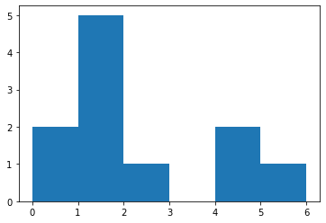

1. Definitions
1.1. Probability Space
Let
1.2. Pushforward Measure
Given \[ X \colon \Omega \to \mathbb{R} \] and \[ g \colon \mathbb{R} \to \mathbb{R} \] both measureable, we have that \[ g \circ X \] is also measureable.
The pushforward measure is then: \( \begin{tikzcd} \Omega & A & \mathbb{R}_{\geq 0} \\ & & \mathbb{R}_{\geq 0} \arrow["X", from=1-1, to=1-2] \arrow["g", from=1-2, to=1-3] \arrow["P", from=1-1, to=2-3] \arrow["X_*P", from=1-2, to=2-3] \arrow["(g \circ X)_* P", from=1-3, to=2-3] \end{tikzcd}\)
2. MATH 649K Nasrin
2.1. Homework 1
2.1.1. Problem 1
\(\lambda\)
- \((\Omega, \mathcal{F}, P)\) be a probability space
- \(|A| \leq \mathbb{N}\)
- \(X \colon \Omega \to A\) be a random variable
- \(g \colon A \to [0, \infty]\)
\(\therefore\)
Let \(Y=g(X)\), then, \[\begin{align*} \mathbb{E}[Y] &= \sum_{y \in Y} y P(Y = y) \\ &= \sum_{y \in Y} y \sum_{x \in g^{-1}[y]} P(X = x) \\ &= \sum_{y \in Y} \sum_{x \in g^{-1}[y]} g(x) P(X = x) \\ \end{align*}\] Note: \(\{y\}\) is a partition of \(\text{im}(g)\) hence \(g^{-1}(y)\) forms a partition of \(X\). Hence: \[ \sum_{y \in Y} \sum_{x \in g^{-1}[y]} \simeq \sum_{x \in X} \] So we have the desired result, \[ \sum_{x \in X} g(x) P(X = x) \]
2.1.2. Problem 2
\(\lambda\)
- \(\{E_n\}_{n=1}^{\infty}\) be a sequence of independent events
Note that \(\left\{\bigcap_{n = 1}^{i} E_n \right\}_{i = 1}^{\infty}\) is a decreasing sequence of events.
\[ P(\bigcap_{n = 1}^{\infty} E_n) = P(\lim_{i \to \infty} \bigcap_{n = 1}^{i} E_n) \\ = \lim_{i \to \infty} P( \bigcap_{n = 1}^{i} E_n) \\ = \lim_{i \to \infty} \prod_{n = 1}^{i} E_n = \prod_{n = 1}^{\infty} P(E_n)\]
2.1.3. Problem 3
\(\lambda\)
- \(T\) be the text "A Chronicle of Ancient Sunlight", partition \(\mathbb{N}\) by the residue classes \(\mod \ell (T)\) (the length of \(T\))
- \(E_k \in \mathcal{F}\) be the event that $T $begins at position \(k \cdot \ell (T)\)
\[ \forall k \in \mathbb{N} . P(E_k) = \frac{1}{K^{\ell(T)}} > 0 \]
Thus, \[ \sum_{k \in \mathbb{N}} P(E_k) = \infty \] and \[ \{E_k\}_{k \in \mathbb{N}} \] are an independent set of events.
Hence by Borel-Cantelli we have that \[ P(\{E_k \ \text{i.o.} \}) = 1 \] The chimp will almost surely write the novel. (Infinitely many times in fact; what a hard worker!)
2.1.4. Problem 4
2.1.5. Problem 5
- a
We get that \(Y_n\) is the result of pulling all coins out of the barrel. This means that \(P(Y_n = j) = 0\) when \(j\) is not the number of silver coins and \(1\) when \(j\) is the number of silver coins.
\[ P(Y_n = j) = \sum_{i \in [0 .. n]} P(Y_n = j \vert \ i \text{ Silver Coins}) P(i \text{ Silver Coins}) = \frac{1}{n+1} \]
- b
Let us condition on two properties, \[ Y_n = i \] and that the "Next coin is Silver = S" or "Next coin is Gold = G".
\[\begin{align*} P(Y_{n-1} = j) &= \sum_{i \in [0 .. n]} P(Y_{n-1} = j \vert S \land \ Y_n = i) P(S \land Y_n = i) \\ &+ P(Y_{n-1} = j \vert G \land \ Y_n = i) P(G \land Y_n = i) \\ &= \sum_{i \in [0 .. n]} P(Y_{n-1} = j \vert S \land \ Y_n = i) P(S \vert Y_n = i) P(Y_n = i) \\ &+ P(Y_{n-1} = j \vert G \land \ Y_n = i) P(G \vert Y_n = i) P(Y_n = i) \\ \end{align*}\] Now we may evaluate some of the expressions. \[ P(Y_{n-1} = j \vert S \land \ Y_n = i) = \begin{cases} 1 & j = i-1 \\ 0 & \text{else} \end{cases} \] \[ P(Y_{n-1} = j \vert G \land \ Y_n = i) = \begin{cases} 1 & j = i \\ 0 & \text{else} \end{cases} \] \[ P(S \vert \ Y_n = i) = \frac{i}{n} \] \[ P(G \vert \ Y_n = i) = \frac{n - i}{n} \] \[ P(Y_n = i) = \frac{1}{n+1} \]
Due to the first two equations, we get a lot of zero terms. There are only two cases when there are non zero terms. That being when \[ i = j \] and \[ i = j + 1 \] So the sum becomes \[ 1 \cdot \frac{j + 1}{n} \cdot \frac{1}{n + 1} + 1 \cdot \frac{n - j}{n} \cdot \frac{1}{n+1} = \frac{1}{n} \]
- c
I conjecture: \[ P(Y_{k} = i) = \frac{1}{k+1} \]
- d
We can calculate this similarly to part (b) (and by similarly, I mean I literally copy pasted the result and did a search and replace)
Let us condition ok two properties, \[ Y_k = i \] and that the "Next coin is Silver = S" or "Next coin is Gold = G".
\[ \begin{align*} P(Y_{k-1} = j) &= \sum_{i \in [0 .. k]} P(Y_{k-1} = j \vert S \land \ Y_k = i) P(S \land Y_k = i)\\ &+ P(Y_{k-1} = j \vert G \land \ Y_k = i) P(G \land Y_k = i) \\ &= \sum_{i \in [0 .. k]} P(Y_{k-1} = j \vert S \land \ Y_k = i) P(S \vert Y_k = i) P(Y_k = i)\\ &+ P(Y_{k-1} = j \vert G \land \ Y_k = i) P(G \vert Y_k = i) P(Y_k = i) \\ \end{align*}\] Now we may evaluate some of the expressions. \[ P(Y_{k-1} = j \vert S \land \ Y_k = i) = \begin{cases} 1 & j = i-1 \\ 0 & \text{else} \end{cases} \] \[ P(Y_{k-1} = j \vert G \land \ Y_k = i) = \begin{cases} 1 & j = i \\ 0 & \text{else} \end{cases} \] \[ P(S \vert \ Y_k = i) = \frac{i}{k} \] \[ P(G \vert \ Y_k = i) = \frac{k - i}{k} \] \[ P(Y_k = i) = \frac{1}{k+1} \]
Due to the first two equations, we get a lot of zero terms. There are only two cases when there are non zero terms. That being when \[ i = j \] and \[ i = j + 1 \] So the sum becomes \[ 1 \cdot \frac{j + 1}{k} \cdot \frac{1}{k + 1} + 1 \cdot \frac{k - j}{k} \cdot \frac{1}{k+1} = \frac{1}{k} \]
2.1.6. Problem 6
- a
Let \(P_{n,m} := P(A \text{ is always ahead} \vert \ [A \text{ has } n \text{ votes}] \land [B \text{ has } m \text{ votes}])\)
Then \(1 - P_{m,n}\) is the probability of the negation; thus \(1 - P_{m,n} = P(A \text{ is not always ahead} \vert \ [A \text{ has } n \text{ votes}] \land [B \text{ has } m \text{ votes}])\) If there is a point where \(A\) is not always ahead, then there exists a time where \(A\) is tied with \(B\). Hence, \(1 - P_{m,n} = P(A \text{ is at some point tied with } B \vert \ [A \text{ has } n \text{ votes}] \land [B \text{ has } m \text{ votes}])\)
- b
We know that \(A\) eventually wins due to \(n > m\). Hence any sequence that begins with \(B\) will eventually tie. Also any sequence that begins with \(A\) can be put in put in bijection with a sequence starting with \(B\). This is because any sequence that ties with \(A\) starting can be flipped (A to B and B to A) into a sequence beginning with \(B\) and eventually tying. This is has an inverse, hence bijective.
Note: \(A\) and \(B\) cannot tie in the first vote because either \(A\) or \(B\) gets one vote and the other has zero. So someone is ahead on the first vote. If \(A\) and \(B\) eventually tie, then there is one person who was ahead of the other, then there was one vote that tied them. Call the first such case the \(n\) th vote. Both are tied on the \(n\) th vote. If one person was ahead of another, and they tie, that means the person that was behind was the one that got the \(n\) th vote.
Hence, the one who was ahead gets the first vote and the person who was behind gets the \(n\) th vote.
By reversing the order of the votes, we get a dual case where the person who was ahead in the original case is now the person who was behind in the dual case. This is a bijection of cases hence it does not matter who gets the first vote.
- c
We prove this by counting.
\[ P(T) = \frac{\text{No. of Sequences with Ties}}{\text{No. of Sequences}} \]
There are \[ \]
Let \(t\) be the number of sequences that end have ties. Each sequence is determined by the places where \(n\) votes for \(A\) are given.
The probability of tying is \[ P(T) = P(T \land A) + P(T \land B) = 2 \cdot P(T \land B) \]
\[ P(T) = 2 \cdot P(T | B) P(B) \] because there is a bijection between tying sequences beginning with \(A\) or \(B\). Because \(A\) always wins we know \(P(T | B) = 1\) hence \(P(T) = 2 \cdot \frac{m}{m + n}\).
Thus \[ \begin{align*} P_{n,m} &= 1 - P(\text{Sequence eventually ties}) \\ &= 1 - 2 \cdot P(\text{Sequence begins with }B) \\ &= 1 - 2 \frac{m}{m+n} \\ &= \frac{n - m}{m+n} \\ \end{align*}\]
2.2. Homework 2
2.2.1. Problem 1
\( \lambda \)
- \( \{N(t), t \geq 0 \} \) be a PP with rate \( \lambda > 0 \)
- \( G \) be a non-negative random variable with mean \( \mu \) and variance \( \sigma^2 \)
- \( G \) be independent of \( N(t) \)
- A
\( \Cov(G,N(G)) = \E[G \cdot N(G)] - \E[N(G)] \E[G] \)
We shall condition on \( G \).
\[ \E[G \cdot N(G)] = \E[\E[G \cdot N(G) \vert G]] = \E[G \cdot \lambda G]\] \[ \E[N(G)] = \E[\E[ N(G) \vert G]] = \E[\lambda G] \] Both of these calculations use \( \E[N(t)] = \lambda t \), when given \( G \) we can substitute in \( G \) for t. Thus, \( \Cov(G, N(G)) = \lambda (\E[G^2] - \E[G]^2) = \lambda \Var[G] = \lambda \sigma^2 \)
- B
\begin{align*} \Var[N(G)] &= \E[\E[N(G)^2 \vert G]] - \E[\E[N(G) \vert G]]^2 \\ &= \E[\lambda^2 G^2 + \lambda G] - \E[\lambda G]^2 \\ &= \E[\lambda^2 G^2] - \E[\lambda G]^2 + \E [\lambda G] \\ &= \lambda^2 \Var[G] + \lambda \E[G] \end{align*}
2.2.2. Problem 2
\( \lambda \)
- \( \{N(t), t \geq 0 \} \) be a PP (Using Definition 2.1.2) with rate \( \lambda \)
- \( I \) be an interval of length \( t \)
Calculate the Laplace Transform of \( N(t) \)
\begin{align*} F(t + h) &= \E[e^{-s N(t + h)}] \\ &= \E[e^{-s (N(t) + (N(t+h) - N(t)))}] \\ &= \E[e^{-s N(t)} e^{-s (N(t+h) - N(t)}] \\ &= \E[e^{-s N(t)}] \E[e^{-s (N(t+h) - N(t)}] \\ &= F(t) \E[e^{-s (N(h))}] \\ \end{align*}First equality is calculating the laplace transform and defining a function \( F \) to be the value of the laplace transform at \( x \). Second equality is by using the properties of counting process. Third equality is using properties of exponentials. Fourth equality is using independence of increments. Last equality is noticing that we have another term of the laplace transform. This gives us a functional relationship which will be used to actually solve for the values of \( F \).
To find the value of \( \E[e^{-s (N(h))}] \) we may condition on the value of \(N(h)\). This formatting looks gross sorry about that :(
\begin{align*} \E[e^{-s (N(h))}] &= \E[\E[e^{-s (N(h))} \vert N(h)]]\\ &= \E[e^{-s (N(h))} \vert N(h) = 0] P(N(h) = 0) + \\ &\E[e^{-s (N(h))} \vert N(h) = 1] P(N(h) = 1) + \\ &\E[e^{-s (N(h))} \vert N(h) \geq 2] P(N(h) \geq 2) \\ &= 1 \cdot (1 - (\lambda h + o(h) + o(h))) + e^{-s} (\lambda h + o(h)) + \sum_{i = 2}^{\infty} e^{-s \cdot i} P(N(h) = i) \\ &= 1 - \lambda h + e^{-s} \lambda h + o(h) \end{align*}We use three cases, \( n=0,1,\geq 2 \). These cases are motivated by the given definition of our process. We then apply the properties of the process for the case of \( 0 \) and \( 1 \) and use summations for greater than \( 2 \). Using the properties of the poisson process again and combining like terms we get the last equality.
Hence:
\(F(t + h) = F(t) (1 - \lambda h + e^{-s} \lambda h + o(h))\)
\(\implies\) \(\frac{F(t + h) - F(t)}{h} = F(t)(-\lambda + e^{-s} \lambda) + \frac{o(h)}{h}\)
By letting \(h \to 0\) we obtain, \(F'(t) = F(t)(-\lambda + e^{-s} \lambda)\)
Rearanging: \(\frac{F'(t)}{F(t)} = \lambda (-1 + e^{-s})\)
Integrating by \(t\) yields: \(\log(F(t)) = \lambda t (-1 + e^{-s})\)
So: \(F(t) = e^{\lambda t (-1 + e^{-s})}\) which is the Laplace transform of a Poisson random variable.
By uniqueness of the Laplace transform we get that \(N(t)\) is a Poisson random variable.
2.2.3. Problem 3
\( \lambda \)
- \( \psi_i(t) \) be the indicator function of bug \( i \) causing an error by \( t \)
First, \( \E[M_2(t)] \), I'll use it in the next proof. We use a different indicator function, \( I_i^{(2)} \) indicates bug \( i \) causes \( 2 \) errors. This is Poisson Distributed.
\begin{align*} \E[M_2(t)] &= \sum_i \E[I_i^{(2)}(t)] \\ &= \sum_{i} e^{-\lambda_i t} \frac{(\lambda_i t)^2}{2} \end{align*} \begin{align*} \E\left[\left(\Lambda(t) - \frac{M_1(t)}{t}\right)^2\right] &= \E\left[\left(\Lambda(t) - \frac{M_1(t)}{t}\right)^2\right] + 0 \\ &= \E\left[\left(\Lambda(t) - \frac{M_1(t)}{t}\right)^2\right] + \E\left[\left(\Lambda(t) - \frac{M_1(t)}{t}\right)\right]^2 \\ &= \Var[\Lambda(t) - \frac{M_1(t)}{t}] \\ &= \Var[\Lambda(t)] + \frac{\Var(M_1(t))}{t^2} - \frac{2}{t} \Cov(\Lambda(t), M_1(t)) \\ &= [\sum_i \lambda_i^2 (e^{-\lambda_i t})(1-e^{-\lambda_i t})] + \\ &\frac{[\sum_i (\lambda_i t e^{-\lambda_i t}) (1 - \lambda_i t e^{-\lambda_i t})]}{t^2} - \frac{2}{t} [\sum_i \Cov(\psi_i(t), I_i(t))] \\ &= [\sum_i \lambda_i^2 (e^{-\lambda_i t})(1-e^{-\lambda_i t})] + \\ &\frac{[\sum_i (\lambda_i t e^{-\lambda_i t}) (1 - \lambda_i t e^{-\lambda_i t})]}{t^2} - \frac{2}{t} [\sum_i \lambda_i e^{-\lambda_i t} \lambda_i t e^{-\lambda_i t}] \\ &= \sum_i \lambda_i^2 e^{- \lambda_i t} + \frac{\sum_i \lambda_i e^{-\lambda_i t}}{t} \\ &= \frac{\E[M_1(t) + 2 M_2(t)]}{t^2} \\ \end{align*}First equality is by adding 0. Second equality is by using \( \E[\Lambda(t) - \frac{M_1(t)}{t}] = 0 \) (we proved this in class). Hence \( \E\left[\left(\Lambda(t) - \frac{M_1(t)}{t}\right)\right]^2 = 0 \). Third equality is from \( \Var(X) = \E[X^2] - \E[X]^2 \). Fourth equality is by using definition of \( \Var \) for possibly non independent random variables. Fifth equality is from breaking down \( \Lambda \) and \( M_1 \) into their summation forms and applying the variance to all of the terms. Sixth equality is calculating the covariance between the summands. Seventh equality is combining terms with the same index \( i \). Last equality is to notice the two sums are the definitions of \( M_1 \) and \( 2M_2 \) (Which is only motivated because that was what we wanted to show).
2.2.4. Problem 4
\( \lambda \)
- \( N(t) \) be a non-homogeneous Poisson Process with rate \( \lambda(t) \)
- A
\( \lambda(t) = \begin{cases} 6 & 0 \leq t < 2 \\ 15 & 2 \leq t < 4 \\ 15 - (\frac{5}{2})(t-4) & 4 \leq t \leq 6 \end{cases} \) From this we can define \( m(t) \)
\( m(t) = \begin{cases} 6t & 0 \leq t < 2 \\ 15(t-2) + 12 & 2 \leq t < 4 \\ 15(t-4) - (\frac{5}{2})(\frac{1}{2}(t-4)^2-4(t-4)) + 42 & 4 \leq t \leq 6 \end{cases} \)
- B
Calculate \( m(5) - m(3) = 62.75 \) \( P(N(5) - N(3) = 0) = \exp(-62.75) \frac{62.75^0}{0!} \simeq 5.5978500469\cdot 10^{-28}\)
2.2.5. Problem 5
\( \lambda \)
- \( M(t) \) be the total amount of money paid in \( (0,t] \)
- The number of payments follow a Poisson Process with \( \lambda = 5 \)
- The Payments are exponentially distributed with expected value \( 20,000 \)
- \( \E[M(4)] \)
We have the following relationship between the terms:
\[ M(t) = \sum_{i=0}^{N(t)} P_i \] Using the formula from the random number of random variables we can calculate the expected value.
Hence \( \E[M(t)] = \E[N(t)] \E[P_i] \)
\( \E[M(4)] = 5 \cdot 4 \cdot 20,000 = 400,000 \)
2.2.6. Problem 6
\( \lambda \)
- \(N(t)\) be a Poisson Process with rate \(1\)
- \(\Lambda\) be a non negative non constant random variable.
- \(N_\Lambda(t) := N(\Lambda t)\), \(N_\Lambda\) is then Poisson with rate \(\lambda\) when conditioning on \(\Lambda = \lambda\)
Suppose for sake of contradiction that \(N_\Lambda(t)\) had independent increments,
\begin{align*} P(N_\Lambda(1) - N_\Lambda(0) = 0,N_\Lambda(2) - N_\Lambda(1) = 0) &= P(N_\Lambda(1) - N_\Lambda(0) = 0) P(N_\Lambda(2) - N_\Lambda(1) = 0) \\ &= P(N_\Lambda(2) = 0) \end{align*}Calculating \(P(N_\Lambda(1) = 0)\) yields:
\(P(N_\Lambda(1)) = \E[P(N(\lambda) = 0 \vert \Lambda = \lambda)] = \E[e^{-\Lambda}]\)
By stationary increments we also have
\(P(N_\Lambda(2) - N_\Lambda(1)) = \E[P(N(2\lambda) - N(\lambda) = 0 \vert \Lambda = \lambda)] = \E[e^{-\Lambda}]\)
Calculating \(P(N_\Lambda(2))\) yields:
\(P(N_\Lambda(2)) = \E[P(N(2\lambda) = 0 \vert \Lambda = \lambda)] = \E[e^{-2\Lambda}]\)
Hence:
\begin{align*} P(N_\Lambda(1) - N_\Lambda(0) = 0) P(N_\Lambda(2) - N_\Lambda(1) = 0) &= \E[e^{-\Lambda}]^2 \\ &< \E[e^{-2\Lambda}] \\ &= P(N_\Lambda(2) = 0)\\ \end{align*}The inequality appears using Jensen's inequality where \( x^2 \) is a convex function. The inequality is strict due to \(\Lambda\) being non constant in the hypothesis.
2.3. Homework 3
2.3.1. Problem 1
- A
Let \( F_{V}(v) \) denote the CDF of \( V \) at \( v \). Note that \( F_U(u) \) for \( U \) uniform from \( [0,1] \) has the property that \( \forall u \in [0,1] . F_U(u) = u \).
First we show that the \( CDF \) of \( X_i \) is the same as the CDF of \( \alpha \) for \( i = 0 \).
\begin{align*} P(X_0 \leq j) &= P(U_0 \leq \sum_{m = 1}^j \alpha_m) \\ &= P(U_0 \leq F_\alpha(j)) \\ &= F_\alpha(j) \end{align*}Next we show that the \( CDF \) of \( X_i \) is the same as the CDF of \( q_{X_{i - 1}} \) for \( i > 0 \).
\begin{align*} P(X_n \leq j) &= P(U_n \leq \sum_{m = 1}^j q_{X_{n-1}, m}) \\ &= P(U_n \leq F_{q_{X_{n-1}}}(j)) \\ &= F_{q_{X_{n-1}}}(j) \end{align*}Hence \( X_i \) has the distribution we want.
To show that \( X_i \) is a Markov Chain, we need to show that it has the Markov property.
Suppose \( X_n = j_n \) then \( X_{n+1} = \inf_{j_{n+1}} U_{n+1} \leq \sum_{m = 1}^{j_{n+1}} q_{i, m} \). So \( X_{n+1} \) only depends on random variables which are also independent of the past. So the Markov property holds.
- B
import numpy as np import matplotlib.pyplot as plt np.random.seed(24599253) # Input: Initial Distribution `alpha` and transition matrix `p` alpha = np.array([1/6 for i in range(6)]) p = np.array([[0, 1/3, 2/3, 0, 0, 0], [1/2, 1/2, 0, 0, 0, 0], [0, 0, 0, 1/4, 1/2, 1/4], [0, 1/3, 1/6, 1/6, 1/3, 0], [0, 0, 0, 0, 1/2, 1/2], [1/4, 1/2, 1/4, 0, 0, 0]]) # Step 1: u_0 = np.random.uniform() i = 0 while(sum(alpha[:i]) < u_0): i += 1 x_0 = i - 1 x_n = [x_0] for k in range(10): # Step 2: u_n = np.random.uniform() # Step 3: i = 0 while(sum(p[x_n[-1], :i]) < u_n): i += 1 x_n.append(i-1) _ = plt.hist(x_n, bins = [0,1,2,3,4,5,6])
0 0.10999239911748915 [4] 4 [0. 0. 0. 0. 0.5] 1 0.703630489091046 [4, 4] 4 [0. 0. 0. 0. 0.5] 2 0.08218580690750654 [4, 4, 5] 5 [0.25 0.5 0.25 0. 0. 0. ] 3 0.24690225782026776 [4, 4, 5, 0] 0 [0.] 4 0.9535197880073909 [4, 4, 5, 0, 1] 1 [0.5 0.5] 5 0.6663585794590124 [4, 4, 5, 0, 1, 1] 1 [0.5 0.5] 6 0.5565583825902818 [4, 4, 5, 0, 1, 1, 1] 1 [0.5 0.5] 7 0.8486494924842696 [4, 4, 5, 0, 1, 1, 1, 1] 1 [0.5 0.5] 8 0.21120786765810307 [4, 4, 5, 0, 1, 1, 1, 1, 1] 1 [0.5 0.5] 9 0.501279767774941 [4, 4, 5, 0, 1, 1, 1, 1, 1, 0] 0 [0.]
array ((2 5 1 0 2 1)) array ((0 1 2 3 4 5 6)) <BarContainer object of 6 artists> 
2.3.2. Problem 2
Consider a two-state Markov Chain with state space \( S = \{1,2\} \) and transition matrix \( P = \begin{pmatrix} 1 - p & p \\ q & 1-q \end{pmatrix} \).
Denote \( X = \begin{pmatrix} q & p \\ q & p \end{pmatrix} \) which has adjugate matrix \( \adj(X) = \begin{pmatrix} p & -p \\ -q & q \end{pmatrix} \) and determinant \( \det(X) = 0 \).
These \( X \) are very well behaved. We may prove some properties about them.
First, the definition of \( X \) is motivated by the problem statement.
\begin{align} P^{(n)} &= \begin{pmatrix} \frac{q}{p + q} + \frac{p}{p + q}(1 - p - q)^n & \frac{p}{p + q} - \frac{p}{p + q}(1 - p - q)^n \\ \frac{q}{p + q} - \frac{q}{p + q}(1 - p - q)^n & \frac{p}{p + q} + \frac{q}{p + q}(1 - p - q)^n \\ \end{pmatrix} \\ &= \frac{1}{p + q} \begin{pmatrix} q + p(1 - p - q)^n & p - p(1 - p - q)^n \\ q - q(1 - p - q)^n & p + q(1 - p - q)^n \\ \end{pmatrix} \\ &= \frac{1}{p + q} \left( X + \begin{pmatrix} p(1 - p - q)^n & - p(1 - p - q)^n \\ - q(1 - p - q)^n & q(1 - p - q)^n \\ \end{pmatrix} \right) \\ &= \frac{1}{p + q} \left( X + (1 - p - q)^n \begin{pmatrix} p & - p \\ - q & q \\ \end{pmatrix} \right) \\ &= \frac{1}{p + q} \left( X + (1 - p - q)^n \adj(X) \right) \end{align}Second, \( X + \adj(X) = \begin{pmatrix} q + p & 0 \\ 0 & p + q \end{pmatrix} = (p+q) I_2 \)
Third, it's helpful to use \( \adj(X) \) because it tells these three facts
- \( \adj(X)^2 = \adj(X^2) \)
- \( X \adj(X) = \det(X) I = 0 \)
- \( \adj(cX) = c \adj(X) \)
We will prove this problem using Induction and all of this preliminary work
Formally, we will show:
\[ P^{(n)} = \frac{1}{p+q} \left( X + (1 - p - q)^n \adj(X) \right) \]
Base Case: \( n = 0 \)
\begin{align} P^{(0)} &= \frac{1}{p + q}(X + (1 - p - q)^0 \adj(X)) \\ &= \frac{1}{p + q}(X + \adj(X)) \\ &= \frac{1}{p + q}((p + q) I_2) \\ &= I_2 \\ \end{align}Inductive Hypothesis: Suppose
\[ P^{(n)} = \frac{1}{p+q} \left( X + (1 - p - q)^n \adj(X) \right) \]
\begin{align*} P^{(n)}P &= \frac{1}{p+q} \left( X + (1 - p - q)^n \adj(X) \right) \cdot \frac{1}{p+q} \left( X + (1 - p - q)^1 \adj(X) \right) \\ &= \frac{1}{(p+q)^2} \left( X^2 + (1 - p - q) X \cdot \adj(X) + (1 - p - q)^n \adj(X) X + (1 - p - q)^{n + 1} \adj(X) \adj(X) \right) \\ &= \frac{1}{(p+q)^2} \left( X^2 + (1 - p - q)^{n + 1} \adj(X)^2 \right) \\ &= \frac{1}{(p+q)^2} \left( (p + q)X + (1 - p - q)^{n + 1} \adj(X^2) \right) \\ &= \frac{1}{(p+q)^2} \left( (p + q)X + (1 - p - q)^{n + 1} \adj((p + q)X) \right) \\ &= \frac{1}{(p+q)^2} \left( (p + q)X + (p + q)(1 - p - q)^{n + 1} \adj(X) \right) \\ &= \frac{1}{(p+q)} \left( X + (1 - p - q)^{n + 1} \adj(X) \right) \\ &= P^{(n + 1)} \end{align*}We have that going from one step to the next is just multiplying the transition matrix. First we multiply the two summation forms of \( P \) and distribute. We know that a matrix times its adjugate is the determinant times the identity, in this case it is \( 0 \). We then have nice forms for the squares of \( X \) and \( \adj(X) \) respectively. Performing matrix multiplication verifies that \( X^2 = (p+q) X \). We then use some rules of \( \adj \) from the third note above. Factoring yields the definition of \( P^{(n+1)} \) we wanted proving the induction.
2.3.3. Problem 3
Consider a discrete time Markov chain with transition matrix \( P = \begin{pmatrix} 1/2 & 1/3 & 1/6 \\ 3/4 & 0 & 1/4 \\ 0 & 1 & 0 \end{pmatrix} \)
- A
\( P^{3} = \begin{pmatrix} 1/2 & 1/3 & 1/6 \\ 9/16 & 1/4 & 3/16 \\ 3/8 & 1/2 & 1/8 \end{pmatrix} \) hence irreducible. \( P_{11} = 1/2 \) implies state \( 1 \) is aperiodic and the chain is irreducible meaning all states are aperiodic.
- B
\( P^2 \begin{bmatrix} 1 \\ 0 \\ 0 \end{bmatrix} = \begin{bmatrix} 1/2 \\ 1/3 \\ 1/6 \end{bmatrix} \) Hence \( P_{13}^{2} = 1/6 \)
- C
We may diagonalize \( P \) as \( S J S^{-1} \) where
\( S = \begin{pmatrix} 0 & \frac{-1}{3} & 1 \\ \frac{-1}{2} & 0 & 1 \\ 1 & 1 & 1 \end{pmatrix} \) \( J = \begin{pmatrix} \frac{-1}{2} & 0 & 0 \\ 0 & 0 & 0 \\ 0 & 0 & 1 \end{pmatrix} \) \( S^{-1} = \begin{pmatrix} 1 & \frac{-4}{3} & \frac{1}{3} \\ \frac{-3}{2} & 1 & \frac{1}{2} \\ \frac{1}{2} & \frac{1}{3} & \frac{1}{6} \end{pmatrix} \)
This is useful as \( P^n = SJ^n S^{-1} \)
Taking the limit as \( n \to \infty \) shows \( \pi = S E_{3,3} S^{-1} \) where \( E \) is the unit matrix with one in row \( 3 \) column \( 3 \), that is \( E = \begin{pmatrix} 0 & 0 & 0 \\ 0 & 0 & 0 \\ 0 & 0 & 1 \end{pmatrix} \). It's worth naming \( E \) this way because it has nice multiplication properties, making it quick to work with. Similarly note the column of \( 1 \)'s in \( S \), that will pick out the bottom row in \( S^{-1} \).
\begin{align} S E_{3,3} S^{-1} &= (S E_{3,3}) S^{-1} \\ &= \begin{pmatrix} 0 & 0 & 1 \\ 0 & 0 & 1 \\ 0 & 0 & 1 \end{pmatrix} S^{-1} \\ &= \begin{pmatrix} \frac{1}{2} & \frac{1}{3} & \frac{1}{6} \\ \frac{1}{2} & \frac{1}{3} & \frac{1}{6} \\ \frac{1}{2} & \frac{1}{3} & \frac{1}{6} \end{pmatrix} \\ \end{align}
2.3.4. Problem 4
Consider the Rainbow Warriors Baseball team. They either win or lose a season. There are four possible combinations of their performance during this year and the last. Denote their performance by a two character string, where the first character is the performance last year and the second character is how they performed this year. That is,
- \( WW \) if they won the last year and this year
- \( WL \) if they won the last year but lost this year
- \( LW \) if they lost last year but one this year
- \( LL \) if they lost last year and this year
Because the team can either win or lose, we can transition from one state to the next by their performance. Giving us the diagram:
\begin{tikzpicture}[->,>=stealth',shorten >=1pt,auto,node distance=2.8cm, thin, bend angle = 20] \tikzstyle{every state}=[fill=white,draw=black,thick,text=black,scale=1] \node[state] (A) {$WW$}; \node[state] (B) [right of=A] {$WL$}; \node[state] (C) [below of=A] {$LW$}; \node[state] (D) [below of=B] {$LL$}; \path (A) edge [loop above] node[above] {$W$} (A); \path (A) edge node[above] {$L$} (B); \path (B) edge [bend right] node[sloped,above] {$W$} (C); \path (B) edge node[right] {$L$} (D); \path (C) edge node[left] {$W$} (A); \path (C) edge [bend right] node[sloped,below] {$L$} (B); \path (D) edge node[below] {$W$} (C); \path (D) edge [loop below] node[below] {$L$} (D); \end{tikzpicture}Using the information from the problem statement we can fill in \( W \) and \( L \) on the arrows with the given probabilities. Note that we are given the probabilities in each state for \( W \) but the total probability leaving the state must be \( 1 \) hence we can infer \( L = 1 - W \).
\begin{tikzpicture}[->,>=stealth',shorten >=1pt,auto,node distance=2.8cm, thin, bend angle = 20] \tikzstyle{every state}=[fill=white,draw=black,thick,text=black,scale=1] \node[state] (A) {$WW$}; \node[state] (B) [right of=A] {$WL$}; \node[state] (C) [below of=A] {$LW$}; \node[state] (D) [below of=B] {$LL$}; \path (A) edge [loop above] node[above] {$0.7$} (A); \path (A) edge node[above] {$0.3$} (B); \path (B) edge [bend right] node[sloped,above] {$0.4$} (C); \path (B) edge node[right] {$0.6$} (D); \path (C) edge node[left] {$0.5$} (A); \path (C) edge [bend right] node[sloped,below] {$0.5$} (B); \path (D) edge node[below] {$0.2$} (C); \path (D) edge [loop below] node[below] {$0.8$} (D); \end{tikzpicture}We were also given standard names for each of the states in the problem.
\begin{tikzpicture}[->,>=stealth',shorten >=1pt,auto,node distance=2.8cm, thin, bend angle = 20] \tikzstyle{every state}=[fill=white,draw=black,thick,text=black,scale=1] \node[state] (A) {$0$}; \node[state] (B) [right of=A] {$2$}; \node[state] (C) [below of=A] {$1$}; \node[state] (D) [below of=B] {$3$}; \path (A) edge [loop above] node[above] {$0.7$} (A); \path (A) edge node[above] {$0.3$} (B); \path (B) edge [bend right] node[sloped,above] {$0.4$} (C); \path (B) edge node[right] {$0.6$} (D); \path (C) edge node[left] {$0.5$} (A); \path (C) edge [bend right] node[sloped,below] {$0.5$} (B); \path (D) edge node[below] {$0.2$} (C); \path (D) edge [loop below] node[below] {$0.8$} (D); \end{tikzpicture}- A
The transition probability matrix is read from the above diagram.
\( P = \begin{pmatrix} 0.7 & 0 & 0.3 & 0 \\ 0.5 & 0 & 0.5 & 0 \\ 0 & 0.4 & 0 & 0.6 \\ 0 & 0.2 & 0 & 0.8 \\ \end{pmatrix} \)
- B
The long run proportion \( \pi \) is a row vector satisfying: \( \pi P = \pi \) this implies \( \pi (P - I) \) so \( \pi \) is an element of the null space of \( (P-I)^T \).
This is a standard linear algebra exercise. The null space has dimension one and is spanned by the vector \( \begin{pmatrix} \frac{5}{9} & \frac{1}{3} & \frac{1}{3} & 1 \end{pmatrix} \). We have an additional constraint that the sum of the elements must add to one (meaning \( \frac{5}{9}c + \frac{1}{3}c + \frac{1}{3}c + 1c = 1 \implies c = \frac{9}{20} \implies \pi = \begin{pmatrix} \frac{1}{4} & \frac{3}{20} & \frac{3}{20} & \frac{9}{20} \end{pmatrix} \))
2.3.5. Problem 5
The transition matrix is \( P = \begin{pmatrix} 0 & 1/2 & 1/2 \\ 1/2 & 0 & 1/2 \\ 1/2 & 1/2 & 0 \end{pmatrix} = \frac{1}{2} (J - I) \) where \( J = \begin{pmatrix} 1 & 1 & 1 \\ 1 & 1 & 1 \\ 1 & 1 & 1 \end{pmatrix} \) is the matrix of ones and \( I \) is the identity matrix.
To find the probability that a state returns to itself, we need to find out the element of the diagonal of \( P^{(n)} \).
We may leverage symmetry in the problem to reduce computation.
Note, the matrix \( P \) is symmetric, hence \( P^n \) is also symmetric. Thus the elements on the diagonal are the same. We may then compute a diagonal element by using \( \tr(P^{n}) / 3 \).
Furthermore, the trace can also be computed in two ways. The trace is both the sum of the diagonal elements and the sum of the eigenvalues. In this problem calculating the sum of the eigenvalues is easier.
The matrix \( J \) has well known eigenvalues. \( J \) has eigenvalues \( 2 \) with multiplicity \( 1 \) and \( 0 \) with multiplicity \( 2 \).
\( J - I \) then has eigenvalues \( 1 \) with multiplicity \( 1 \) and \( -1 \) with multiplicity \( 2 \).
\( P = \frac{1}{2} (J - I) \) has eigenvalues \( 1 \) with multiplicity \( 1 \) and \( \frac{-1}{2} \) with multiplicity \( 2 \).
Hence, the eigenvalues of \( P^n \) is then \( 1 \) with multiplicity \( 1 \) and \( \left( \frac{-1}{2} \right)^n \) with multiplicity \( 2 \).
Thus, \( \tr(P^n) = 1 + 2(\frac{-1}{2})^n \)
Hence the probability that the element returns to itself is \( \frac{1 + 2(\frac{-1}{2})^n}{3} \)
2.4. Homework 4
2.4.1. Problem 1
Consider a birth and death process with birth rates \( \{ \lambda_i \}_{i \geq 0} \) and death rates \( \{ \mu_i \}_{i \geq 1} \). Let \( T_i \) be the time the process takes for the population size to go from \( i \) to \( i + 1 \).
- A
The random variable \( T_i \) may transition from state \( i \) to \( i + 1 \) (birth) or \( i - 1 \) (death). Let us denote the first transition from state \( i \) by a random variable \( I_i \). That is,
\[ I_i = \begin{cases} 1 & \text{If the first transistion from state $i$ is a birth} \\ 0 & \text{If the first transistion from state $i$ is a death} \end{cases} \]
We may consider the conditional expectation \( \mathbb{E}[T_i \vert I_i] \). Regardless of whether the transistion is a birth or a death, the time it takes for the process \( T_i \) to transition at all is exponential with rate \( \lambda_i + \mu_i \) (mean \(\frac{1}{\lambda_i + \mu_i}\)). If the first transition is a birth, then we do not need to wait any longer to go from \( i \) to \( i + 1 \). This means,
\[ \mathbb{E}[T_i \vert I_i = 1] = \frac{1}{\lambda_i + \mu_i} \]
If the first transition is a death, then from state \( i - 1 \) it will take the expected amount of time to go to state \( i \) first (\( \mathbb{E}[T_{i - 1}] \)), then to state \( i + 1 \) (\( \mathbb{E}[T_{i}] \)). This means,
\[ \mathbb{E}[T_i \vert I_i = 0] = \frac{1}{\lambda_i + \mu_i} + \mathbb{E}[T_{i - 1}] + \mathbb{E}[T_i]\]
By the law of total expectation, we may bring this together.
\[ \mathbb{E}[T_i \vert I_i] = \mathbb{E}[T_i \vert I_i = 1] \mathbb{P}(I_i = 1) + \mathbb{E}[T_i \vert I_i = 0] \mathbb{P}(I_i = 0) \]
Substituting the probabilities and conditional expectations, yields
\[ \mathbb{E}[T_i] = \frac{1}{\lambda_i + \mu_i} \cdot \left(\frac{\lambda_i}{\lambda_i + \mu_i} \right) + \left(\frac{1}{\lambda_i + \mu_i} + \mathbb{E}[T_{i - 1}] + \mathbb{E}[T_i]\right) \cdot \left(\frac{\mu_i}{\lambda_i + \mu_i} \right) \]
We may simplify more using the substitution
\[ \frac{\lambda_i}{\lambda_i + \mu_i} = 1 - \frac{\mu_i}{\lambda_i + \mu_i} \]
Hence \[ \mathbb{E}[T_i] = \frac{1}{\lambda_i + \mu_i} \cdot \left(1 - \frac{\mu_i}{\lambda_i + \mu_i} \right) + \left(\frac{1}{\lambda_i + \mu_i} + \mathbb{E}[T_{i - 1}] + \mathbb{E}[T_i]\right) \cdot \left(\frac{\mu_i}{\lambda_i + \mu_i} \right) \]
The rest are algebraic manipulations,
\begin{align*} \mathbb{E}[T_i] &= \frac{1}{\lambda_i + \mu_i} \cdot \left(1 - \frac{\mu_i}{\lambda_i + \mu_i} \right) + \left(\frac{1}{\lambda_i + \mu_i} + \mathbb{E}[T_{i - 1}] + \mathbb{E}[T_i]\right) \cdot \left(\frac{\mu_i}{\lambda_i + \mu_i} \right) \\ &= \frac{1}{\lambda_i + \mu_i} - \frac{\mu_i}{(\lambda_i + \mu_i)^2} + \frac{\mu}{(\lambda_i + \mu_i)^2} + \mathbb{E}[T_{i - 1}] \cdot \left(\frac{\mu_i}{\lambda_i + \mu_i} \right) + \mathbb{E}[T_i] \cdot \left(\frac{\mu_i}{\lambda_i + \mu_i} \right) \\ &= \frac{1}{\lambda_i + \mu_i} + \mathbb{E}[T_{i - 1}] \cdot \left(\frac{\mu_i}{\lambda_i + \mu_i} \right) + \mathbb{E}[T_i] \cdot \left(\frac{\mu_i}{\lambda_i + \mu_i} \right) \\ &= \frac{1}{\lambda_i + \mu_i} + \left(\frac{\mu_i}{\lambda_i + \mu_i} \right) \cdot (\mathbb{E}[T_{i - 1}] + \mathbb{E}[T_i]) \end{align*}Now, by subtracting \( \mathbb{E}[T_i] \) on both sides we get
\[ 0 = \frac{1}{\lambda_i + \mu_i} + \left(\frac{\mu_i}{\lambda_i + \mu_i} \right) \cdot (\mathbb{E}[T_{i - 1}] + \mathbb{E}[T_i]) - \mathbb{E}[T_i] \]
Multiplying by \( \lambda_i + \mu_i \) yields \[ 0 = 1 + \mu_i \mathbb{E}[T_{i - 1}] + \mu_i \mathbb{E}[T_i] - (\lambda_i + \mu_i) \mathbb{E}[T_i] \]
Cancelling common terms yields \[ 0 = 1 + \mu_i \mathbb{E}[T_{i - 1}] - \lambda_i \mathbb{E}[T_i] \]
Moving \( \mathbb{E}[T_i] \) terms to one side and isolating yields \[ \lambda_i \mathbb{E}[T_i] = 1 + \mu_i \mathbb{E}[T_{i - 1}] \] \[ \mathbb{E}[T_i] = \frac{1}{\lambda_i} + \frac{\mu_i}{\lambda_i} \mathbb{E}[T_{i - 1}] \]
Which is our final answer.
- B
Suppose the birth and death process have constant paramters \( \lambda_i = \lambda \) and \( \mu_i = \mu \). Calculate \( \mathbb{E}[T_{kj}] \), the expected value of the time to go from state \( k \) to state \( j \).
Given the base case \( \mathbb{E}[T_0] = \frac{1}{\lambda} \) and recurrence relation \( \mathbb{E}[T_i] = \frac{1}{\lambda_i} + \frac{\mu_i}{\lambda_i} \mathbb{E}[T_{i - 1}] \) from part A, we may calculate \( \mathbb{E}[T_i] \) explicitly by induction.
We may show that if \( \lambda \neq \mu \) then the expected value is \[ \mathbb{E}[T_i] = \frac{1 - \left( \frac{\mu}{\lambda} \right)^{i + 1}}{\lambda - \mu} \]
- Base Case
\[ \mathbb{E}[T_0] = \frac{1 - \left( \frac{\mu}{\lambda} \right)^{1}}{\lambda - \mu} = \frac{\lambda - \mu}{(\lambda - \mu) \lambda} = \frac{1}{\lambda} \]
- Inductive Step
Suppose for \( i \in \mathbb{N} \) the following holds \[ \mathbb{E}[T_i] = \frac{1 - \left( \frac{\mu}{\lambda} \right)^{i + 1}}{\lambda - \mu} \] Consider \( i + 1 \)
\begin{align*} \mathbb{E}[T_{i + 1}] &= \frac{1}{\lambda} + \frac{\mu}{\lambda} \mathbb{E}[T_{i}] \\ &= \frac{1}{\lambda} + \frac{\mu}{\lambda} \cdot \frac{1 - \left( \frac{\mu}{\lambda} \right)^{i + 1}}{\lambda - \mu} \\ &= \frac{\lambda - \mu}{\lambda (\lambda - \mu)} + \frac{\mu - \mu \left( \frac{\mu}{\lambda} \right)^{i + 1}}{\lambda (\lambda - \mu)} \\ &= \frac{\lambda - \mu \left( \frac{\mu}{\lambda} \right)^{i + 1}}{\lambda (\lambda - \mu)} \\ &= \frac{\left( \frac{1}{\lambda} \right) \lambda - \mu \left( \frac{\mu}{\lambda} \right)^{i + 1}}{\left( \frac{1}{\lambda} \right) \lambda (\lambda - \mu)} \\ &= \frac{1 - \frac{\mu}{\lambda} \left( \frac{\mu}{\lambda} \right)^{i + 1}}{(\lambda - \mu)} \\ &= \frac{1 - \left( \frac{\mu}{\lambda} \right)^{i + 2}}{(\lambda - \mu)} \end{align*}We may use this formula to find \( \mathbb{E}[T_{kj}] \). Note that to get from state \( k \) to \( j \) we will first need to get through states \( k + 1, k + 2, \cdots, j - 2, j - 1, j \). That is, \( T_{j - 1} = \sum_{i = k}^{j - 1} T_{i} \). We may use the linearity of expectation to note that \( \mathbb{E}[T_{kj}] = \sum_{i = k}^{j - 1} \mathbb{E}[T_i] \)
Then, using summation rules (pulling out constants, sum of \( 1 \)'s is difference of indicies \( +1 \)).
\[ \sum_{i = k}^{j - 1} \mathbb{E}[T_i] = \sum_{i = k}^{j - 1} \frac{1 - \left( \frac{\mu}{\lambda} \right)^{i + 1}}{\lambda - \mu} = \frac{1}{\lambda - \mu} \cdot \sum_{i = k}^{j - 1} 1 - \left( \frac{\mu}{\lambda} \right)^{i + 1} = \frac{1}{\lambda - \mu} \cdot \left( (j - k) - \sum_{i = k}^{j - 1} \left( \frac{\mu}{\lambda} \right)^{i + 1} \right) \]
Lastly we shall notice that the last equality holds a geometric sum with ratio \( \frac{\mu}{\lambda} \). This has a well known closed form. Substituting yields: \[ \sum_{i = k}^{j - 1} \left( \frac{\mu}{\lambda} \right)^{i + 1} \right) = \]
\begin{align*} \frac{1}{\lambda - \mu} \cdot \left( (j - k) - \sum_{i = k}^{j - 1} \left( \frac{\mu}{\lambda} \right)^{i + 1} \right) &= \frac{1}{\lambda - \mu} \cdot \left( (j - k) - \left( \frac{-\left(\frac{\mu}{\lambda} \right)^{j + 1} + \left( \frac{\mu}{\lambda} \right)^{k + 1}}{1 - \frac{\mu}{\lambda}} \right) \right) \\ &= \frac{1}{\lambda - \mu} \cdot \left( (j - k) - \left( \frac{\mu}{\lambda} \right)^{k + 1} \left( \frac{- \left( \frac{\mu}{\lambda} \right)^{j - k} + 1}{1 - \frac{\mu}{\lambda}} \right) \right) \\ &= \frac{(j - k)}{\lambda - \mu} - \frac{\left( \frac{\mu}{\lambda} \right)^{k + 1}}{\lambda - \mu} \left( \frac{-\left( \frac{\mu}{\lambda} \right)^{j - k} + 1}{1 - \frac{\mu}{\lambda}} \right) \\ \end{align*}Which is our desired result.
If \( \lambda = \mu \) then we use the same defining recurrence relation, \( \mathbb{E}[T_i] = \frac{1}{\lambda_i} + \frac{\mu_i}{\lambda_i} \mathbb{E}[T_{i - 1}] \) from part A. This ends up being simpler in this case, \( \mathbb{E}[T_i] = \frac{1}{\lambda} + \mathbb{E}[T_{i - 1}] \). We may calculate \( \mathbb{E}[T_i] \) explicitly by induction. We may show each expected value is of the form \( \mathbb{E}[T_i] = \frac{i + 1}{\lambda} \).
- Base Case \[ \mathbb{E}[T_0] = \frac{0 + 1}{\lambda} = \frac{1}{\lambda} \]
- Inductive Step
Suppose for some \( i \in \mathbb{N} \) we have \( \mathbb{E}[T_i] = \frac{i + 1}{\lambda} \).
Then \[ \mathbb{E}[T_{i + 1}] = \frac{1}{\lambda} + \mathbb{E}[T_i] = \frac{1}{\lambda} + \frac{i+1}{\lambda} = \frac{(i + 1) + 1}{\lambda} \].
By similar reasoning the expected value can be represented as the sum of times between \( k \) and \( j \),
\begin{align*} \sum_{i = k}^{j - 1} \mathbb{E}[T_i] &= \sum_{i = k}^{j - 1} \frac{i + 1}{\lambda} \\ &= \frac{j-k}{\lambda} + \frac{1}{\lambda} \sum_{i = k}^{j - 1} i \\ &= \frac{j-k}{\lambda} + \frac{1}{\lambda} \frac{(j - 1 + k)(j - k)}{2} \\ &= \frac{2j-2k}{2 \lambda} + \frac{(j - 1 + k)(j - k)}{2 \lambda} \\ &= \frac{2j-2k + j^2 - jk - j + k + jk - k^2}{2 \lambda} \\ &= \frac{j-k + j^2- k^2}{2 \lambda} \\ &= \frac{j(j + 1)- k(k + 1)}{2 \lambda} \\ \end{align*}Which is the desired result.
- C
Similar to how we conditioned on \( I_i \) in part A to find the expected value, we would like to condition on \( I_i \) to find the variance. We would like to use the following law of total variance,
\[ \mathbb{V}[T_i] = \mathbb{V}[\mathbb{E}[T_i \vert I_i]] + \mathbb{E}[\mathbb{V}[T_i \vert I_i]] \]
We start with the first term. From part A, we have that
\[ \mathbb{E}[T_i \vert I_i] = \begin{cases} \frac{1}{\lambda_i + \mu_i} & I_i = 1 \\ \frac{1}{\lambda_i + \mu_i} + \mathbb{E}[T_{i - 1}] + \mathbb{E}[T_{i}] & I_i = 0 \end{cases} \]
We may "package" this piecewise function using the indicator function.
\[ \mathbb{E}[T_i \vert I_i] = \frac{1}{\lambda_i + \mu_i} + (1 - I_i)(\mathbb{E}[T_{i - 1}] + \mathbb{E}[T_{i}]) \]
Now it is easy to take the variance of such a formula. Note that \( I_i \) is Bernoulli with parameter \( \frac{\lambda_i}{\lambda_i + \mu_i} \).
\begin{align*} \mathbb{V}[\mathbb{E}[T_i \vert I_i]] &= \mathbb{V}\left[ \frac{1}{\lambda_i + \mu_i} + (1 - I_i)(\mathbb{E}[T_{i - 1}] + \mathbb{E}[T_{i}]) \right] \\ &= \mathbb{V}\left[ (1 - I_i)(\mathbb{E}[T_{i - 1}] + \mathbb{E}[T_{i}]) \right] \\ &= (\mathbb{E}[T_{i - 1}] + \mathbb{E}[T_{i}])^2\mathbb{V}\left[ 1 - I_i \right] \\ &= (\mathbb{E}[T_{i - 1}] + \mathbb{E}[T_{i}])^2\mathbb{V}\left[ I_i \right] \\ &= (\mathbb{E}[T_{i - 1}] + \mathbb{E}[T_{i}])^2 \frac{\lambda_i \mu_i}{(\lambda_i + \mu_i)^2} \\ \end{align*}Now, for the second term. In order to take the expected value we need a formula for the variance that looks like the following
\[ \mathbb{V}[T_i \vert I_i] = \begin{cases} ? & I_i = 1 \\ ? & I_i = 0 \end{cases} \]
If we consider when a birth occurs \( I_i = 1 \), then this is the variance of the waiting time for a transistion to happen. This is the variance of an exponential random variable with rate \( \lambda_i + \mu_i \). Hence \( \mathbb{V}[T_i \vert I_i = 1] = \frac{1}{(\lambda_i + \mu_i)^2} \). If we consider when a death occurs, we first need to wait for the death to occur then we would need to wait to return back to the state \( i \) then to \( i+1 \). This the total variance is \( \mathbb{V}[T_i \vert I_i = 1] = \frac{1}{(\lambda_i + \mu_i)^2} + \mathbb{V}[T_{i-1}] + \mathbb{V}[T_{i}] \). We now have the proper form of the variance.
\[ \mathbb{V}[T_i \vert I_i] = \begin{cases} \frac{1}{(\lambda_i + \mu_i)^2} & I_i = 1 \\ \frac{1}{(\lambda_i + \mu_i)^2} + \mathbb{V}[T_{i-1}] + \mathbb{V}[T_{i}] & I_i = 0 \end{cases} \]
With this form we may again "package" the information using the indicator random variable.
\[ \mathbb{V}[T_i \vert I_i] = \frac{1}{(\lambda_i + \mu_i)^2} + (1 - I_i) (\mathbb{V}[T_{i-1}] + \mathbb{V}[T_{i}]) \]
This form is easiest to take the expectation of.
\begin{align*} \mathbb{E}[\mathbb{V}[T_i \vert I_i]] &= \mathbb{E}[\frac{1}{(\lambda_i + \mu_i)^2} + (1 - I_i) (\mathbb{V}[T_{i-1}] + \mathbb{V}[T_{i}])] \\ &= \frac{1}{(\lambda_i + \mu_i)^2} + \mathbb{E}[(1 - I_i) (\mathbb{V}[T_{i-1}] + \mathbb{V}[T_{i}])] \\ &= \frac{1}{(\lambda_i + \mu_i)^2} + (\mathbb{V}[T_{i-1}] + \mathbb{V}[T_{i}]) \mathbb{E}[(1 - I_i) ] \\ &= \frac{1}{(\lambda_i + \mu_i)^2} + (\mathbb{V}[T_{i-1}] + \mathbb{V}[T_{i}]) \left(\frac{\mu_i}{\lambda_i + \mu_i}\right) \end{align*}By the law of total variance this becomes \[ \mathbb{V}[T_{i}] = (\mathbb{E}[T_{i - 1}] + \mathbb{E}[T_{i}])^2 \frac{\lambda_i \mu_i}{(\lambda_i + \mu_i)^2} + \frac{1}{(\lambda_i + \mu_i)^2} + (\mathbb{V}[T_{i-1}] + \mathbb{V}[T_{i}]) \left(\frac{\mu_i}{\lambda_i + \mu_i}\right) \] Distributing the coeficient on the variences yields,
\[ \mathbb{V}[T_{i}] = (\mathbb{E}[T_{i - 1}] + \mathbb{E}[T_{i}])^2 \frac{\lambda_i \mu_i}{(\lambda_i + \mu_i)^2} + \frac{1}{(\lambda_i + \mu_i)^2} + \mathbb{V}[T_{i-1}] \left(\frac{\mu_i}{\lambda_i + \mu_i}\right) + \mathbb{V}[T_{i}] \left(\frac{\mu_i}{\lambda_i + \mu_i}\right) \] Grouping \( \mathbb{V}[T_i] \) terms \[ (1 - \frac{\mu_i}{\lambda_i + \mu_i})\mathbb{V}[T_{i}] = (\mathbb{E}[T_{i - 1}] + \mathbb{E}[T_{i}])^2 \frac{\lambda_i \mu_i}{(\lambda_i + \mu_i)^2} + \frac{1}{(\lambda_i + \mu_i)^2} + \mathbb{V}[T_{i-1}] \left(\frac{\mu_i}{\lambda_i + \mu_i}\right) \] \[ (\frac{\lambda_i}{\lambda_i + \mu_i})\mathbb{V}[T_{i}] = (\mathbb{E}[T_{i - 1}] + \mathbb{E}[T_{i}])^2 \frac{\lambda_i \mu_i}{(\lambda_i + \mu_i)^2} + \frac{1}{(\lambda_i + \mu_i)^2} + \mathbb{V}[T_{i-1}] \left(\frac{\mu_i}{\lambda_i + \mu_i}\right) \] \[ \mathbb{V}[T_{i}] = (\mathbb{E}[T_{i - 1}] + \mathbb{E}[T_{i}])^2 \frac{ \mu_i}{(\lambda_i + \mu_i)} + \frac{1}{(\lambda_i + \mu_i) \lambda_i} + \mathbb{V}[T_{i-1}] \left(\frac{\mu_i}{\lambda_i}\right){ \]
This is the desired result.
2.4.2. Problem 2
- A
Consider a two state, \( \{0,1\} \), continuous time Markov chain, \( P(t) \), with matrix,
\[ Q = \begin{pmatrix} - \lambda & \lambda \\ \mu & -\mu \end{pmatrix}\]
Such that \( P'(t) = Q P(t) = P(t) Q \)
By hypothesis of the Markov chain, we have the relation on \( P(t) \) \[ P_{00}(t) + P_{01}(t) = P_{10}(t) + P_{11}(t) = 1 \]. From this, it is enough to solve for the first column of \( P(t) \) as the second column has elements \( 1 - \text{First Col} \).
- Forward Equation
The first column of the forwards equation \( P'(t) = P(t) Q \) is
\begin{align*} P_{00}'(t) &= - \lambda P_{00}(t) + \mu P_{01}(t) \\ P_{10}'(t) &= - \lambda P_{10}(t) + \mu P_{11}(t) \\ \end{align*}Both equations have two unknowns from the same row. We may use the relation that \( P_{r1} = 1 - P_{r0} \) to simplify.
\begin{align*} P_{00}'(t) &= - \lambda P_{00}(t) + \mu (1 - P_{00}(t)) = \mu - (\lambda + \mu)P_{00}(t) \\ P_{10}'(t) &= - \lambda P_{10}(t) + \mu (1 - P_{10}(t)) = \mu - (\lambda + \mu)P_{10}(t) \\ \end{align*}These are both first order linear ordinary differential equations with constant coefficients. They have solutions.
\begin{align*} P_{00}(t) &= \frac{\mu}{\lambda + \mu} + c_1 e^{-(\lambda + \mu)t} \\ P_{10}(t) &= \frac{\mu}{\lambda + \mu} + c_1 e^{-(\lambda + \mu)t} \end{align*}Using the initial condition that \( P_{00}(0) = 1 \) and \( P_{10}(0) = 0 \) we obtain the solution
\begin{align*} P_{00}(t) &= \frac{\mu}{\lambda + \mu} + \frac{\lambda}{\lambda + \mu} e^{-(\lambda + \mu)t} \\ P_{00}(t) &= \frac{\mu}{\lambda + \mu} - \frac{\mu}{\lambda + \mu} e^{-(\lambda + \mu)t} \end{align*}From this solution we can obtain \( P_{01} \) from the relation \( P_{01} = 1 - P_{00} \) and \( P_{11} \) from \( P_{11} = 1 - P_{10} \). Putting these all in a matrix yields.
\[ P(t) = \begin{pmatrix} \frac{\mu}{\lambda + \mu} + \frac{\lambda}{\lambda + \mu} e^{-(\lambda + \mu)t} & 1 - (\frac{\mu}{\lambda + \mu} + \frac{\lambda}{\lambda + \mu} e^{-(\lambda + \mu)t}) \\ \frac{\mu}{\lambda + \mu} - \frac{\mu}{\lambda + \mu} e^{-(\lambda + \mu)t} & 1 - (\frac{\mu}{\lambda + \mu} - \frac{\mu}{\lambda + \mu} e^{-(\lambda + \mu)t}) \end{pmatrix} \]
We may simplify using \( 1 - \frac{\mu}{\mu + \lambda} = \frac{\lambda}{\mu + \lambda} \)
\[ P(t) = \begin{pmatrix} \frac{\mu}{\lambda + \mu} + \frac{\lambda}{\lambda + \mu} e^{-(\lambda + \mu)t} & \frac{\lambda}{\lambda + \mu} - \frac{\lambda}{\lambda + \mu} e^{-(\lambda + \mu)t} \\ \frac{\mu}{\lambda + \mu} - \frac{\mu}{\lambda + \mu} e^{-(\lambda + \mu)t} & \frac{\lambda}{\lambda + \mu} + \frac{\mu}{\lambda + \mu} e^{-(\lambda + \mu)t} & \end{pmatrix} \]
- Backward Equation
The first column of the backwards equation \( P'(t) = Q P(t) \) is
\begin{align*} P_{00}'(t) &= \lambda P_{10}(t) - \lambda P_{00}(t) \\ P_{10}'(t) &= \mu P_{00}(t) - \mu P_{10}(t) \\ \end{align*}Notice, that
\begin{align*} \mu P_{00}'(t) &= \mu \lambda P_{10}(t) - \mu \lambda P_{00}(t) \\ \lambda P_{10}'(t) &= \lambda \mu P_{00}(t) - \lambda \mu P_{10}(t) \\ \end{align*}So \( \mu P_{00}'(t) + \lambda P_{10}'(t) = 0 \implies \mu P_{00}(t) + \lambda P_{10}(t) = c \).
We also have that \( P(0) = I \) which implies that \( \mu = c \). Let us isolate \( P_{10} \) in order to construct a differential equation of one unknown.
\[\mu P_{00}(t) + \lambda P_{10}(t) = \mu \implies \lambda P_{10}(t) = \mu - \mu P_{00}(t) \]
Hence \( P_{00}'(t) &= \lambda (\mu - \mu P_{00}(t)) - \lambda P_{00}(t) \)
The differential equation is a first order linear ordinary differential equation with constant coefficients
\( P_{00}'(t) &= \mu - (\lambda + \mu) P_{00}(t) \)
This has solution
\[ P_{00}(t) = \frac{\mu}{\lambda + \mu} + c_1 e^{-(\lambda + \mu)t} \]
Usin the initial condition that \( P_{00}(0) = 1 \) we obtain the solution
\[ P_{00}(t) = \frac{\mu}{\lambda + \mu} + \frac{\lambda}{\lambda + \mu} e^{-(\lambda + \mu)t} \]
From this solution we can obtain \( P_{01} \) from the relation \( P_{01} = 1 - P_{00} \). We may also obtain \( P_{10} = \frac{1}{\lambda} (\mu - \mu P_{00}) \). We may then obtain \( P_{11} \) from \( P_{11} = 1 - P_{10} \). Putting these all in a matrix yields.
\[ P(t) = \begin{pmatrix} \frac{\mu}{\lambda + \mu} + \frac{\lambda}{\lambda + \mu} e^{-(\lambda + \mu)t} & 1 - (\frac{\mu}{\lambda + \mu} + \frac{\lambda}{\lambda + \mu} e^{-(\lambda + \mu)t}) \\ (\frac{\mu}{\lambda})(1 - (\frac{\mu}{\lambda + \mu} + \frac{\lambda}{\lambda + \mu} e^{-(\lambda + \mu)t})) & 1 - (\frac{\mu}{\lambda})(1 - \frac{\mu}{\lambda + \mu} + \frac{\lambda}{\lambda + \mu} e^{-(\lambda + \mu)t}) \end{pmatrix} \]
We may simplify using \( 1 - \frac{\mu}{\mu + \lambda} = \frac{\lambda}{\mu + \lambda} \)
\[ P(t) = \begin{pmatrix} \frac{\mu}{\lambda + \mu} + \frac{\lambda}{\lambda + \mu} e^{-(\lambda + \mu)t} & \frac{\lambda}{\lambda + \mu} - \frac{\lambda}{\lambda + \mu} e^{-(\lambda + \mu)t} \\ \frac{\mu}{\lambda + \mu} - \frac{\mu}{\lambda + \mu} e^{-(\lambda + \mu)t} & \frac{\lambda}{\lambda + \mu} + \frac{\mu}{\lambda + \mu} e^{-(\lambda + \mu)t} & \end{pmatrix} \]
- Forward Equation
- B
Using the solution above for \( P(t) \) we may compute the limit (each element has \( e^{-(\lambda + \mu)t} \) term which goes to \( 0 \) as \( t \to \infty \))
\[ \lim_{t \to \infty} P(t) = \begin{pmatrix} \frac{\mu}{\lambda + \mu} & \frac{\lambda}{\lambda + \mu} \\ \frac{\mu}{\lambda + \mu} & \frac{\lambda}{\lambda + \mu} \end{pmatrix} \]
This immediately tells us the probability that the Markov chain will be in state zero is \( \frac{\mu}{\lambda + \mu} \).
However, a more rigorous way to show this fact is to solve the two equations \( \pi Q = 0 \) and \( \sum_i \pi_i = 1 \). The former equation comes from the defining equation for \( \pi \)
\[ \pi P(t) = \pi \implies \pi P'(t) = 0 \implies \pi Q P(t) = 0 \] We know that the solution to \( P(t) \) is \( e^{Qt} \) and one property of the matrix exponential is \( \det(e^{Qt}) = e^{\text{tr}(Qt)} \). So as long as \( \lambda + \mu \neq 0 \) then \( P(t) \) is invertible. Thus we have that \( \pi Q = 0 \).
Hence,
\[ \pi Q = \begin{pmatrix} -\lambda \pi_0 + \mu \pi_1 & \lambda \pi_0 + -\mu \pi_1 \end{pmatrix} = \begin{pmatrix} 0 & 0 \end{pmatrix} \]
Also, \[\pi_0 + \pi_1 = 1 \implies \pi_1 = 1 - \pi_0\]
Thus, \( 0 = - \lambda \pi_0 + \mu (1 - \pi_0) \implies \pi_0 = \frac{\mu}{\lambda + \mu} \).
2.4.3. Problem 3
We are asked to approximate the probability
\[ \mathbb{P}(N(3) \leq 230) \]
Using theorem 3.3.5 in the book. We may approximate the probability if we know \( \mu \) and \( \sigma \).
First, we may calculate the expected value
\begin{align*} \mathbb{E}[X_n] &= \int_0^{\infty} x \cdot \frac{2 \sqrt{2}}{\pi(x^4 + 1)} dx \\ &= \int_0^{\infty} \frac{\sqrt{2}}{\pi(u^2 + 1)} du \\ &= \left. \frac{\sqrt{2} \tan^{-1}(u)}{\pi} \right\vert_{0}^{\infty} \\ &= \frac{\sqrt{2}}{\pi} \frac{\pi}{2} \\ &= \frac{1}{\sqrt{2}} \end{align*}Next the variance, we need to know the second moment of \( X_n \).
\begin{align*} \mathbb{E}[X_n^2] &= \int_0^{\infty} x^2 \cdot \frac{2 \sqrt{2}}{\pi(x^4 + 1)} dx \\ &= 1 \end{align*}I asked WolframAlpha for help on this one.
The variance is then
\[ \mathbb{V}(X_n) = \mathbb{E}[X_n^2] - \mathbb{E}[X_n]^2 = 1 - \left(\frac{1}{\sqrt{2}}\right)^2 = \frac{1}{2} \]
We may now calculate the probability,
\[ \mathbb{P}(N(t) \geq 230) = \mathbb{P}\left(\frac{N(t) - t \sqrt{2}}{\sqrt{t \cdot \frac{1}{2} \cdot 2^{3/2}}} \geq \frac{230 - t \sqrt{2}}{\sqrt{t \cdot \frac{1}{2} \cdot 2^{3/2}}} \right) \]
When \( t = 3 \) (my first interpretation, \( t \) is in years here) the value is incredibly small, near \( 0 \). Perhaps that was the punchline, but I may have also mis-interpreted the units. Suppose \( t \) were calculated in days. Then \( t = 1095 \) and the probability is very high, near \( 1 \). Suppose \( t \) were calculated in weeks. Then \( t = 156 \) and the probability is reasonable, near \( 0.26 \).
2.4.4. Problem 4
Consider the car buying model. Suppose the lifetime of a car (in years) is uniformly distributed over \( (0,10) \) and suppose that \( C_1 = 3 \) and \( C_2 = 0.5 \).
We have that the long run average cost is
\[ \frac{C_1 + C_2 H(T)}{\int_0^T x h(x) dx + T(1 - H(T)))} \]
Plugging in what's known yields a function of \( T \).
\[ \frac{3 + \frac{1}{2} \frac{T}{10}}{\int_0^T x \frac{1}{10} dx + T(1 - \frac{T}{10})} = \frac{60 + T}{20T - T^2} = f(T) \]
We may minimize this function by differentiating and setting to zero.
\[ f'(T) = \frac{(20T - T^2) - (60+T)(20-2T)}{(20T-T^2)^2} = 0 \]
Note that \( T \in (0,10) \) (namely it is not \( 0 \) or \( 20 \)) hence the denominator is never \( 0 \) hence we may multiply to get the relation.
\[ T^2 + 120T - 1200 = 0 \]
Which has solutions,
\[ T = -20(3 + 2 \sqrt{3}), 40 \sqrt{3} - 60 \]
Only the later solution \( T = 40 \sqrt{3} - 60 \) is in a valid domain (between \(0\) and \(10\)).
2.5. Final Presentation - Markov Chain Monte Carlo
2.5.1. Problem Statement
Given
- A target distribution \( P(x) \)
- A known function \( f(x) = k P(x) \)
Problem
- Is it possible to sample from \( P(x) \)?
Answer
- Yes, it is. We will construct a Markov Chain such that \( \pi_x = P(x) \)
2.5.2. Algorithm
Select an initial value for \( x \), call it \( x_0 \).
Then for a large number of iterations, \( i = 1, \cdots, m \) repeat the following
Draw a candidate from a proposal distribution \( x^* \sim q( x^* \vert x) \)
Calculate an acceptance ratio \( \alpha = \frac{f(x^*)}{f(x)} \frac{q(x \vert x^*)}{q(x^* \vert x)} \)
Then generate a random number uniformly in \( [0,1] \) call it \( u \).
If \( u \leq \alpha \) then accept the new choice of \( x^* \). Meaning \( x_i = x^* \).
If \( u > \alpha \) then reject the new choice of \( x^* \). Meaning \( x_i = x \).
2.5.3. Implementation
Tested on \[ f(x) = e^{\frac{-x^2}{2}} \]
import numpy as np import random import matplotlib.pyplot as plt from scipy.stats import norm # Define the function which is proportional to the target distribution def f(candidate): return np.exp(-0.5 * candidate ** 2) x = [random.random()] # Select a number for i in range(100000): # Begin Iteration block candidate = x[i] + random.gauss(0, 3) # Generate a candidate acceptance_ratio = f(candidate) / f(x[i]) # Calculate the acceptance ratio if random.random() <= acceptance_ratio: # Accept new candidate when random number, u, is less than alpha x.append(candidate) else: # Reject if not x.append(x[i]) plt.hist(x, bins=100, density=True, label="MCMC Histogram") plt.plot(np.arange(-4,4,0.01), norm.pdf(np.arange(-4,4,0.01), 0, 1), label="True Gaussian Distribution") _ = plt.legend(loc="upper right", bbox_to_anchor=(1.6,1))
2.5.4. Proof
- Aperiodic and Irreducible
An irreducible, aperiodic Markov chain has a unique stationary distribution if it exists.
In the book, Theorem 4.3.3.
- Detailed Balance
Suppose we have a Markov Chain with:
- Transition probabilities \( P_{ij} \)
- Distribution of states \( \pi_i \)
Such that,
\( \pi_{i} P_{ij} = \pi_{j} P_{ji} \)
Then \( \pi_i \) satisfies detailed balance with respect to the Markov Chain.
Suppose we have a Markov Chain with:
- Transition probabilities \( P_{ij} \)
- Distribution of states \( \pi_i \) that satisfies detailed balance.
Then \( \pi \) is a stationary distribution of the Markov Chain.
\begin{align*} \forall j, \sum_{i} \pi_i P_{ij} = \sum_{i} \pi_j P_{ji} = \pi_j \sum_{i} P_{ji} = \pi_{j} \end{align*} - Proof
Let
- \( q(x^* \vert x) \) have nonzero density for every point in the target distribution
- \( \alpha(x,x^*) = \min \left( 1, \frac{P(x^*) q(x \vert x^*)}{P(x) q(x^* \vert x)} \right) = \min \left( 1, \frac{f(x^*) q(x \vert x^*)}{f(x) q(x^* \vert x)} \right) \)
- \( P_{x x^*} = P(X_n = x^* \vert X_{n-1} = x) = \begin{cases} q(x^* \vert x) \alpha(x,x^*) & x^* \neq x \\ q(x \vert x) + \sum_{x^* \neq x} q(x, x^*)(1 - \alpha(x,x^*)) & x^* = x \end{cases} \)
Note that \( \alpha(x,x^*) = \) coordinatewise reciprocols of \( \alpha(x^*,x) \). so WLOG assume \( a(x^*,x) = 1, a(x,x^*) = \frac{P(x^*) q(x \vert x^*)}{P(x) q(x^* \vert x)} \) Also note that detailed balence is statisfied when the two states are the same. Assume \( x^* \neq x \).
\begin{align} &&f(x^*) q(x^* \vert x) &= f(x^*) q(x^* \vert x) \\ &\implies &\frac{f(x) q(x \vert x^*)}{f(x) q(x \vert x^*)} f(x^*) q(x^* \vert x) &= f(x^*) q(x^* \vert x) \\ &\implies &f(x) q(x \vert x^*) \alpha(x,x^*) &= f(x^*) q(x^* \vert x) \alpha(x^*, x) \\ &\implies &p(x) q(x \vert x^*) \alpha(x,x^*) &= p(x^*) q(x^* \vert x) \alpha(x^*, x) \\ &\implies &p(x) P_{x,x^*} &= p(x^*) P_{x^*x} \end{align}Thus \( p(x) \) satisfies detailed balance and is stationary for the chain with transition probabilities \( P \) described above.
Uniqueness is determined by the choice of \( q \). Because \( q \) has nonzero density for every state, the chain can transition to any state from any other state, hence the chain is irreducible and aperiodic.
Thus, the Markov chain will converge to its unique stationary distribution \( \pi(i) \) as \( t \to \infty \) which is equal to \( p(i) \).
2.5.5. Applications
Monte Carlo Markov Chain has many applications.
- Bayesian Inference
Suppose we would like to know how likely parameters \( \theta \) are in a model to data \( X \).
That is, suppose we are given data from some experiment, and the histogram looks like a Normal distribution.
import matplotlib.pyplot as plt import numpy as np _ = plt.hist(np.random.normal(3,4,5000), bins = 100, density=True)
Then we would like to model the data using the Normal distribution.
\[ \frac{1}{\sqrt{2 \pi \sigma^2}} e^{\frac{-1}{2} \left( \frac{x - \mu}{\sigma} \right)^2} \]
We would then like to ask, given the data, \( X \), what are the odds that the true mean and variance of the population is \( \mu = 0, \sigma^2 = 1 \). Symbolically,
\[ P(\mu = 0, \sigma^2 = 1 \vert X) = ? \]
We may compute this using Bayes' Theorem.
\[ P(\mu = 0, \sigma^2 = 1 \vert X) = \frac{P(X \vert \mu = 0, \sigma^2 = 1) P(\mu = 0, \sigma^2 = 1)}{P(X)} \]
The denominator is called the evidence, and is calculated using the law of total probability.
\[ P(X) = \int_{\theta \in \Theta} P(X \vert \theta) P(\theta) d \theta \]
This integral in general is very tough to compute. We may skip the process by noticing that
\[ P(\mu = 0, \sigma^2 = 1 \vert X) \propto P(X \vert \mu = 0, \sigma^2 = 1) P(\mu = 0, \sigma^2 = 1) \]
Hence we may calculate the probability density of \( P(\mu = 0, \sigma^2 = 1 \vert X) \) by running MCMC on \( f(\mu, \theta) = P(X \vert \mu, \sigma^2) P(\mu, \sigma^2) \).
This fundementally changed the course of statistics by allowing Bayesian Inference to be computationally tractible.
This approach allows for parameter estimation in models. My time with 'Ike Wai was about implementing an MCMC program in Matlab using multiple parallel chains to test convergence on some groundwater PDE's.
https://github.com/Zaijab/DREAM
https://www.frontiersin.org/articles/10.3389/fams.2019.00055/full
- Numerical Integration - How to calculate expectation and variance using Markov Chains
- Monte Carlo Integration
One way to calculate an integral
\[ \int_{a}^{b} f(x) dx \]
Is to use samples randomly distributed over the interval \( [a,b] \).
That is, suppose we have a sequence of \( X_i \in [a,b] \) sampled iid uniformly.
Then,
\begin{align*} \mathbb{E} \left[\frac{(b - a)}{n} \sum_{i = 0}^{n - 1} f(X_i) \right] &= \frac{(b - a)}{n} \sum_{i = 0}^{n - 1} \mathbb{E} \left[ f(X_i) \right] \\ &= \frac{(b - a)}{n} \sum_{i = 0}^{n - 1} \int_{a}^{b} f(X_i) dP \\ &= \frac{(b - a)}{n} \sum_{i = 0}^{n - 1} \int_{a}^{b} f(x) \frac{1}{(b - a)} dx \\ &= \frac{1}{n} \sum_{i = 0}^{n - 1} \int_{a}^{b} f(x) dx \\ &= \int_{a}^{b} f(x) dx \end{align*}This works for numerical integration. Let us calculate \( \pi \) by numerically integrating over the semicircle.
import numpy as np def semicircle(x): return np.sqrt(1 - x**2) np.mean(np.vectorize(semicircle)(np.random.uniform(-1,1,100000)))*(4)
Note the bounds of integration, we only proved this for a bounded domain of integration. What happens when the domain of integration is unbounded?
- MCMC Integration
Suppose we had an absolutely integrable function \( f \in L^1(\mathbb{R}) \).
We may integrate the function using the previous Monte Carlo method by approximating.
\[ \int_{-\infty}^{\infty} f(x) dx = \lim_{a \to \infty} \int_{-a}^{a} f(x) dx \]
However this does not work well computationally. The reason being, \( \lim_{x \to \infty} f(x) \to 0 \)
This means that as the bounds of integration grows, the many new points will be very close to \( 0 \) and will not contribute much to the integral. So many points sampled by the computer will be for not much benefit. We would like a selection of points sampled "smartly". Rather than sample uniformly, we may sample according to the PDF of the \( X_i \). We can approximate the PDF using MCMC.
\begin{align*} \mathbb{E} \left[\frac{1}{n} \sum_{i = 0}^{n - 1} \frac{f(X_i)}{p(X_i)} \right] &= \frac{1}{n} \sum_{i = 0}^{n - 1} \mathbb{E} \left[ \frac{f(X_i)}{p(X_i)} \right] \\ &= \frac{1}{n} \sum_{i = 0}^{n - 1} \int_{-\infty}^{\infty} \frac{f(X_i)}{p(X_i)} dP \\ &= \frac{1}{n} \sum_{i = 0}^{n - 1} \int_{-\infty}^{\infty} \frac{f(x)}{p(x)} p(x) dx \\ &= \frac{1}{n} \sum_{i = 0}^{n - 1} \int_{-\infty}^{\infty} f(x) dx \\ &= \int_{-\infty}^{\infty} f(x) dx \end{align*}Let us apply MCMC to numerically verify
\[ \int_{-\infty}^{\infty} \frac{1}{x^2 + 1} dx = \pi \]
import numpy as np import random import matplotlib.pyplot as plt from scipy.stats import norm # Define the function which is proportional to the target distribution def f(candidate): return 1 / (candidate**2 + 1) x = [random.random()] # Select a number uniformly from [0,1] for i in range(1000000): # Begin Iteration block candidate = x[i] + random.gauss(0, 1) acceptance_ratio = f(candidate) / f(x[i]) if random.random() <= acceptance_ratio: x.append(candidate) else: x.append(x[i]) counts, edges, bars = plt.hist(x, bins=100, density=True, label="MCMC Histogram") plt.legend(loc="upper right", bbox_to_anchor=(1.6,1)) def f_div_pdf(candidate): return (1 / (candidate**2 + 1)) / (counts[np.where(edges >= candidate)[0][0] - 1]) np.mean(np.vectorize(f_div_pdf)(np.array(x)))
- Monte Carlo Integration
- Sampling Points on a Cow
Here is a non-standard use of MCMC to sample points on a 3D model of a Cow. Define a function
\[ e^{-100 ||d||} \]
Where \( ||d|| \) is the shortest distance from a point in \( \mathbb{R}^3 \) to the cow. Such a \( ||d|| \) can be calculated using high speed (GPU-Optimized) tools for video games like ray tracing. Using MCMC allows us to sample points on the cow.
- Speeding Up Theorem Proving
2.5.6. References
Ross, S. M. (1996). Stochastic processes. India: Wiley.
Matsuura, S., Hanada, M. (2022). MCMC from Scratch: A Practical Introduction to Markov Chain Monte Carlo. Singapore: Springer Nature Singapore.
Mangla, C., Holden, S.B., Paulson, L.C. (2022). Bayesian Ranking for Strategy Scheduling in Automated Theorem Provers. In: Blanchette, J., Kovács, L., Pattinson, D. (eds) Automated Reasoning. IJCAR 2022. Lecture Notes in Computer Science(), vol 13385. Springer, Cham. https://doi.org/10.1007/978-3-031-10769-6_33
SpartacanUsuals, director. YouTube, YouTube, 15 May 2018, https://www.youtube.com/watch?v=0MzH69hFdkE. Accessed 30 Nov. 2022.
Valderrama-Bahamóndez GI and Fröhlich H (2019) MCMC Techniques for Parameter Estimation of ODE Based Models in Systems Biology. Front. Appl. Math. Stat. 5:55. doi: 10.3389/fams.2019.00055
3. MATH 649D Younsi
3.1. Homework 1
3.1.1. Problem 1
- A
Denote \( E_i \) be the event where \( HTTHTH \) happens on the \( i \)-th toss. Note: \( \forall i \mathbb{P}(E_i) = \mathbb{P}(HTTHTH) = \frac{1}{2^6} \) because the tosses are independent. \( \sum_i P(E_i) = \infty \) hence by Borel Cantelli \( \mathbb{P}(HTTHTH \text{ i.o}) = 1 \)
- B
Denote \( E_i \) be the event where \( H\ldots H \) \( i \)-times for tosses \( i \) to \( 2i \). Note: \( \forall i \mathbb{P}(E_i) = \frac{1}{2^i} \). \( \sum_i P(E_i) = 1 \) hence by Borel Cantelli \( \mathbb{P}(HTTHTH \text{ i.o}) = 0 \)
3.1.2. Problem 2
First we do some preliminary simplification, then I will do the proof.
Let \( A \) be an arbitrary set and \( \mathbbm{1}_A \) be it's indicator function. \( \mathcal{F}(\mathbbm{1}_A) = \{\mathbbm{1}_A^{-1}(B) \vert B \text{ Borel} \}\) The characteristic function is only \( 0 \) or \( 1 \) hence we have the cases for \( B \).
- \( 0,1 \not \in B \) \( \implies \mathbbm{1}_A^{-1}(B) = \emptyset \)
- \( 1 \in B \) and \( 0 \not \in B \) \( \implies \mathbbm{1}_A^{-1}(B) = A \)
- \( 0 \in B \) and \( 1 \not \in B \) \( \implies \mathbbm{1}_A^{-1}(B) = A^c \)
- \( 0,1 \in B \) \( \implies \mathbbm{1}_A^{-1}(B) = \Omega \)
\( \mathcal{F}(\mathbbm{1}_A) = \{ \emptyset, A, A^c, \Omega \}\)
Having proved this for a general indicator function this will be true for given \( A \) and \( B \).
Thus the probabilities we need to calculate can be organized into a table.
| \( \emptyset \) | \( A \) | \( A^c \) | \( \Omega \) | |
|---|---|---|---|---|
| \( \emptyset \) | 0 | 0 | 0 | 0 |
| \( B \) | 0 | \( P(A \cap B) \) | \( P(A^c \cap B) \) | \( P(B) \) |
| \( B^c \) | 0 | \( P(A \cap B^c) \) | \( P(A^c \cap B^c) \) | \( P(B^c) \) |
| \( \Omega \) | 0 | \( P(A) \) | \( P(A^c) \) | \( 1\) |
To verify independence in our proof, we only need to see that \( P(A \cap B) = P(A)P(B) \). The rows containing \( \emptyset \) and \( \Omega \) have nothing to verify. Also short lemma if \( A \) and \( B \) are independent then \( A \), \( A^c \), \( B \), and \( B^c \) are all independent.
\begin{align*} P(A^c \cap B^c) &= P((A \cup B)^c) \\ &= 1 - P(A \cup B) \\ &= 1 - [P(A) + P(B) - P(A \cap B)] \\ &= 1 - P(A) - P(B) + P(A)P(B) \\ &= (1 - P(A))(1 - P(B)) \end{align*} \begin{align*} P(A \cap B^c) &= P(A) - P(A \cap B) \\ &= P(A) - P(A)P(B) \\ &= P(A)(1 - P(B)) \end{align*} \begin{align*} P(A^c \cap B) &= P(B) - P(A \cap B) \\ &= P(B) - P(A)P(B) \\ &= P(B)(1 - P(A)) \end{align*}Now, for the actual proof.
Suppose \( A \) and \( B \) are independent.
Then the correspondent \( \sigma \)-algebras are independent using the lemma.
Suppose the \( \sigma \)-algebras are independent. Then all the sets are independent, namely \( A \) and \( B \) are independent.
3.1.3. Problem 3
Let \( X \sim U[-1,1] \) having density \( f(x) = \frac{1}{2} \)
Then \( X \) and \( X^2 \) are not independent. However their expectations are multiplicative. We will not need to compute \( \E[X^2] \) interestingly enough.
Because \( X \) and \( X^3 \) are odd functions on a symmetric interval their expectations are \( 0 \).
Hence \( \E[X^3] = 0 = \E[X^2] \E[X] = \E[X^2] \cdot 0 \)
3.1.4. Problem 4
We have stated in class that a distribution determines a random variable.
Let \( F(x) = \begin{cases} 0 & x < 0 \\ c(x) & 0 \leq x \leq 1 \\ 1 & 1 < x\end{cases} \)
Where \( c(x) \) is the Cantor Function (the famous counter example that goes from \( 0 \) to \( 1 \))
\( F(x) \) is \( 0 \) as \( x \to - \infty \) \( F(x) \) is \( 1 \) as \( x \to \infty \) \( F(x) \) is right continuous \( F(x) \) is increasing \( \forall x . 0 \leq F(x) \leq 1 \)
Hence \( F \) is a distribution for a random variable \( X \).
But \( X \) has no density function.
If it did, then firstly, \( f = 0 \) on \( \mathbb{R} - [0,1] \).
Then suppose \( f \neq 0 \) on some interval \( J \subseteq [0,1] \) then \( \int_J f d \mu \neq 0 \). But every interval contains a constant part of the cantor function meaning the function should have been \( 0 \) on that constant portion. Hence a contradiction.
3.1.5. Problem 5
I remember talking about this problem! Consider the experiment of two tosses of a coin. The columns are the first coin, the rows are the second coin.
| H | T | |
| H | HH | TH |
| T | HT | TT |
Let \( A_1 \) be the event where the first toss is heads. Let \( A_2 \) be the event where the second toss is heads. Let \( A_3 \) be the event where only one toss is heads.
Then,
\( P(A_1 \cap A_2) = \frac{1}{4} = P(A_1) P(A_2) \) (This is the top left element of the table) \( P(A_1 \cap A_3) = \frac{1}{4} = P(A_1) P(A_3) \) (This is the bottom left element of the table) \( P(A_2 \cap A_3) = \frac{1}{4} = P(A_2) P(A_3) \) (This it the top right element of the table)
However,
\( P(A_1 \cap A_2 \cap A_3) = 0 \neq \frac{1}{8} \) We cannot have both coins be heads and only one coin be heads.
3.1.6. Problem 6
- A
Let \( U \colon [0,1] \to \mathbb{R} \) via \( U(\omega) = \omega \).
The distribution of \( U \) is \( F_U(x) = \mathbb{P}(U^{-1}([-\infty,x])) = \mathbb{P}(U^{-1}([0,x])) = \mathbb{P}([0,x]) = x\). The pushforward measure is the same as the original measure hence absolutely continuous and has density \( f \) given by the Radon-Nikodym theorem.
Hence \( \int_0^x f(x) dx = x \implies f(x) = 1 \).
- B
Let \( U(\omega) = \sum_{j = 1}^{\infty} \frac{B_j(\omega)}{2^j} \)
Note that \( B_j(\omega) \) is a Bernoulli random variable.
Let \( \{I_n\}_{n \in \mathbb{N}} \) be an infinite collection of infinite disjoint subsets of \( \mathbb{N} \). The following \( I \)'s work: \( I_n = \{p_n^k \vert k \in \mathbb{Z}_{>0}\} \), but the structure is both not given and irrelevant.
\( U_n = \sum_{j=1}^{\infty} \frac{B_{f_n(j)(\omega)}}{2^j} \), the generating function of each term is
\( M_{\frac{B_{f_n(j)}}{2^j}}(t) = \E[e^{t \frac{B_{f_n(j)}}{2^j}}] = e^0 P(\frac{B_{f_n(j)}}{2^j}} = 0) + e^{\frac{t}{2^j}}P(\frac{B_{f_n(j)}}{2^j}} = 2^{-j}) = \frac{e^{\frac{t}{2^k}} + 1}{2} \)
The MGF for \( U_n \) is
\begin{align} M_{U_n} &= \lim_{k \to \infty} \prod_{j=1}^{k} \frac{e^{\frac{t}{2^k}} + 1}{2} \\ &= \lim_{k \to \infty} \frac{1}{2^k} \prod_{j=1}^{k} e^{\frac{t}{2^k}} + 1 \\ &= \lim_{k \to \infty} \frac{1}{2^k} (\frac{e^{\frac{t}{2^k}} - 1}{e^{\frac{t}{2^k}} - 1}) \prod_{j=1}^{k} e^{\frac{t}{2^k}} + 1 \\ &= \lim_{k \to \infty} \frac{1}{2^k} (\frac{e^{\frac{t}{2^k}} - 1}{e^{\frac{t}{2^k}} - 1}) (e^{\frac{t}{2^k}} + 1) \prod_{j=1}^{k - 1} e^{\frac{t}{2^k}} + 1 \\ &= \lim_{k \to \infty} \frac{1}{2^k} (\frac{e^{\frac{t}{2^{k-1}}} - 1}{e^{\frac{t}{2^k}} - 1}) \prod_{j=1}^{k - 1} e^{\frac{t}{2^k}} + 1 \\ &= \lim_{k \to \infty} \frac{e^{t} -1}{2^k (e^{\frac{t}{2^{k}}} - 1)} \\ &= \frac{e^t - 1}{t} \\ \end{align}This one is crazy. First equality is due to sum of RV is product of MGF. Second equality is me taking out the constant \( 2 \) in the denominator. Third equality is multiplying by \( 1 \) (our favorite analysis trick). Fourth equality is taking the \( n \)-th term of the product out and reducing the index. Fifth equality is multiplying the numerators, notice the difference of squares. Sixth equality is actual black magic, we can multiply \( e^{\frac{t}{2^{k-1}}} -1 \) outside of the product with the \( k-1 \)'st term inside the product, yielding another difference of squares. This reduces the problem (by telescoping) until the last term does not cancel with anything. Last equality is taking the limit. Use the Taylor series of \( e \). This gives
\begin{align} 2^k \cdot (e^{\frac{t}{2^k}} - 1) &= 2^k [\frac{t}{2^k} + \frac{1}{2!}\frac{t^2}{2^{2k}} + \cdots] \\ &= [\frac{t}{1} + \frac{1}{2!}\frac{t^2}{2^{k}} + \cdots] \\ &\to t \text{ as } k \to \infty \end{align}Now we may conclude that this is the MGF of a uniform normal variable. Hence \( U_n \) has a uniform distribution.
All the \( U_n \) are independent due to the \( B_{f_n(j)} \) only looks at the binary digits which are not found in any other \( f_i \) with \( i \neq n \) by construction.
- C
Done by calculating the distribution. \( \mathbb{P}(\Phi^{-1}(U_n) \leq x) = \mathbb{P}(U_n \leq \Phi(x)) = \Phi(x) \)
The first equality is applying \( \Phi \) to both sides not changing the set. The second equality is by noting that \( U_n \) is a uniform random variable, the distribution states \( \mathbb{P}(U_n \leq t) = t \).
Hence the \( X_n \) are random variables (composition of measurable functions) have distribution \( \Phi(x) \) (thus normal) and are independent (\( U_n \) independent implies \( g(U_n) \) independent for \( g \) Borel measurable).
3.1.7. Problem 7
- A
I will prove this statement using part B. Let \( \mathcal{F}(X) \) and \( \mathcal{F}(Y, \mathcal{G}) \) be independent \( \sigma \)-algebras.
\begin{align} \E[XY \vert \mathcal{G}] &= \E[\E[XY \vert \mathcal{F}(Y,\mathcal{G})] \vert \mathcal{G}]\\ &= \E[Y \E[X \vert \mathcal{F}(Y,\mathcal{G})] \vert \mathcal{G}]\\ &= \E[Y \E[X] \vert \mathcal{G}]\\ &= \E[X]\E[Y \vert \mathcal{G}]\\ \end{align}The first equality is the tower property. The second equality is because \( Y \) is \( \mathcal{F}(Y) \)-measurable. The third equality is because \( X \) is independent from \( \mathcal{F}(Y, \mathcal{G}) \) by hypothesis. The last equality is linearity of expected value.
- B
Suppose \( X \) is \( \mathcal{G} \)-measurable. We will show that \( \E[XY \vert \mathcal{G}] = X\E[Y \vert \mathcal{G}] \). We do this proof in stages. We will also show that it is enough to know this fact for non-negative random variables. The justification is, given \( X \) and \( Y \) we may decompose using the standard notation \( X = X^+ - X^- \) and \( Y = Y^+ - Y^- \). Then,
\begin{align} \E[(X^+ - X^-)(Y^+ - Y^-) \vert \mathcal{G}] &= \E[X^+ Y^+ \vert \mathcal{G}] - \\ &\E[X^+ Y^- \vert \mathcal{G}] - \\ &\E[X^- Y^+ \vert \mathcal{G}] + \\ &\E[X^- Y^- \vert \mathcal{G}] \\ &= X^+\E[Y^+ \vert \mathcal{G}] - \\ &X^+\E[ Y^- \vert \mathcal{G}] - \\ &X^-\E[ Y^+ \vert \mathcal{G}] + \\ &X^-\E[ Y^- \vert \mathcal{G}] \\ &= (X^+-X^-)\E[Y^+ \vert \mathcal{G}] - \\ &(X^+ - X^-)\E[ Y^- \vert \mathcal{G}] \\ &= (X^+-X^-)\E[Y^+ - Y^- \vert \mathcal{G}] \\ &= X\E[Y \vert \mathcal{G}] \end{align}(I apologize for the formatting, I didn't know how to make this look better.) By using linearity and assuming the theorem for the positive case we have proven it for the more general case. For the remainder of this proof assume \( X,Y \geq 0 \).
We have that \( X \E[Y \vert \mathcal{G}] \) is \( \mathcal{G} \)-measurable. It remains to be shown that given an \( A \in \mathcal{G} \) \( \int_A X \E[Y \vert \mathcal{G}] dP = \int_A XY dP \)
First assume that \( B \in \mathcal{G} \) and \( X = \mathbbm{1}_B \). Then \( \)
\begin{align*} \int_A \mathbbm{1}_B \E[Y \vert \mathcal{G}] dP &= \int_{A \cap B} \E[Y \vert \mathcal{G}] dP \) \\ &= \int_{A \cap B} Y dP \\ &= \int_{A} \mathbbm{1}_B Y dP \\ &= \int_{A} X Y dP \\ \end{align*}Then we may extend this using linearity to simple functions. Suppose \( X = \sum_{j=1}^{n} c_j \mathbbm{1}_{B_j} \)
\begin{align*} \int_A [\sum_{j=1}^{n} c_j \mathbbm{1}_{B_j}] \E[Y \vert \mathcal{G}] dP &= \sum_{j=1}^{n} \int_{A \cap B_j} c_j \E[Y \vert \mathcal{G}] dP \) \\ &= \sum_{j=1}^{n} \int_{A \cap Bj} c_j Y dP \\ &= \int_{A} [\sum_{j=1}^n c_j \mathbbm{1}_{B_j}] Y dP \\ &= \int_{A} X Y dP \\ \end{align*}Then we suppose that there is an increasing sequence of simple functions \( X_n \to X \).
\begin{align*} \lim_{n \to \infty} \int_A X_n \E[Y \vert \mathcal{G}] dP &= \lim_{n \to \infty} \int_{A} X_n Y dP \\ &= \int_{A} X Y dP \\ \end{align*}The first equation is true because of the last step and we know \( X_n \) are simple. The second one is due to the monotone convergence theorem.
- C
Let \( f \colon \mathbb{R} \to \mathbb{R} \) be Borel Measureable. We will show \( \E[f(X) Y \vert X] = f(X) \E[Y \vert X] \).
We know that \( f(X) \) is \( \mathcal{F}(X) \)-measurable. Hence by part B we may pull it out of the expectation.
3.1.8. Problem 8
First we calculate the expected value of \( W_n \)
\begin{align} \E[W_n] &= \E[\sum_{j=1}^{n} B_j X_j] \\ &= \sum_{j=1}^{n} \E[B_j X_j] \\ &= \sum_{j=1}^{n} [\E[\E[B_j X_j \vert B_j]]] \\ &= \sum_{j=1}^{n} \E[B_j \E[X_j]] \\ &= \sum_{j=1}^{n} \E[B_j \E[X_j \vert B_j]] \\ &= \sum_{j=1}^{n} \E[B_j \cdot 0] \\ &= 0 \end{align}The first equality is the definition of \( W_n \). The second equality uses linearity of expected value. The third equality uses \( \E[X] = \E[\E[X \vert G]] \). The fourth uses the fact \( B_j \) is measurable with respect to \( \mathcal{F}(B_j) \). The fifth uses independence of coin flips. That is, \( B_j \) tells you about the previous \( j-1 \) coin flips. But that is independent from the \( j \)-th coin flip. The sixth is a straight calculation of expected value, \( X_j \) is symmetric around \( 0 \). The last is multiplying and adding.
Now we calculate the expected value with respect to the previous filtration.
\begin{align} \E[W_n \vert X_1, \cdots, X_{n-1}] &= \E[\E[W_n \vert X_1, \cdots, X_n] \vert X_1, \cdots, X_{n_1}] \\ &= \E[\E[W_n] \vert X_1, \cdots, X_{n_1}] \\ &= \E[0 \vert X_1, \cdots, X_{n_1}] \\ &= 0 \\ &= \E[X_{n-1}] \end{align}The first equality uses the tower rule. The second notes that \( W_n \) is \( X_1, \cdots, X_n \) measurable. The third equality uses the expected value we calculated previously. The rest is noting that the expectations are the same as what we desire.
3.1.9. Problem 9
Let \( X \sim N(\mu_1, \sigma_1^2) \) and \( Y \sim N(\mu_2, \sigma_2^2) \) be independent random variables.
Denote \( \varphi_{X + Y}(t) = \E[\exp(it(X + Y))] \) to be the characteristic function of \( X+Y \).
\begin{align} \varphi_{X+Y}(t) &= \varphi_X(t) \varphi_Y(t) \\ &= \exp(it \mu_1 - \frac{\sigma_1^2 t^2}{2}) \exp(it \mu_2 - \frac{\sigma_2^2 t^2}{2}) \\ &= \exp(it (\mu_1 + \mu_2) - \frac{(\sigma_1^2 \sigma_2^2) t^2}{2}) \\ \end{align}Hence \( X+Y \sim N(\mu_1 + \mu_2, \sigma_1^2 + \sigma_2^2) \) Similarly,
\begin{align} \varphi_{X-Y}(t) &= \varphi_X(t) \varphi_Y(-t) \\ &= \exp(it \mu_1 - \frac{\sigma_1^2 t^2}{2}) \exp(-it \mu_2 - \frac{\sigma_2^2 t^2}{2}) \\ &= \exp(it (\mu_1 - \mu_2) - \frac{(\sigma_1^2 \sigma_2^2) t^2}{2}) \\ \end{align}Hence \( X-Y \sim N(\mu_1 - \mu_2, \sigma_1^2 + \sigma_2^2) \)
Independence: In class we had that for normal RV's \( \Cov(X,Y) = 0 \implies \) Independence (False in general). Hence, we perform a quick calculation.
\begin{align*} \Cov(X+Y,X-Y) &= \Cov(X,X-Y) + \Cov(Y,X-Y) \\ &= \Cov(X,X) - \Cov(X, Y) + \Cov(Y,X) - \Cov(Y,Y) \\ &= \sigma_1^2 - \sigma_2^2 \end{align*}This shows that if \( X \) and \( Y \) have the same variance then they are independent. It's curious, symbolically they must have the same variance if they want to be independent. But it's not intuitive for me at least.
3.1.10. Problem 10
Let \( X \sim \exp(\lambda) \). \( X \) has density \( f(x) \colon = \lambda e^{- \lambda x} . (x > 0)\).
\( X \) has distribution function
\begin{align*} F(t) &= \int_0^{t} \lambda e^{- \lambda x} dx \\ &= \lambda [\frac{1}{-\lambda} e^{- \lambda x}]_{x = 0}^{x = t} \\ &= - [e^{- \lambda t} - 1] \\ &= 1 - e^{-\lambda t} \end{align*}- A
\begin{align*} P\{X \geq s + t \vert X \geq s \} &= \frac{P\{X \geq s + t\}}{P\{X \geq s\}} \\ &= \frac{1 - F(s + t)}{1 - F(s)} \\ &= \frac{e^{- \lambda (s + t)}}{e^{- \lambda s}} \\ &= \frac{e^{- \lambda s}e^{-\lambda t}}{e^{- \lambda s}} \\ &= e^{-\lambda t} \\ &= P\{X \geq t \} \end{align*} - B
Suppose \( Y \) is a random variable that has the memoryless property.
Then \( P\{ Y \geq s + t \vert Y \geq s \} = P\{ Y \geq t \} \) Also from the conditional distribution we have \( \frac{P\{ Y \geq s + t\}}{P\{ Y \geq s \}} = P\{ Y \geq t \} \) Hence \( P\{Y \geq s + t\} = P\{Y \geq s \} P\{Y \geq t\} \)
Note, \( P\{ Y \geq s\} = 1 - F_Y(s) \), by hypothesis \( F_Y \) (the distribution of \( Y \)) is continuous.
Denote \( g(s) = 1 - F_Y(s) \). We then have a functional equation \( g(s+t) = g(s) g(t) \) where \( g \) is decreasing (\( F_Y \) is increasing function) and continuous because as \( F_Y \) is continuous again by hypothesis.
Setting \( h(x) = \log(g(x)) \) and taking the log of both sides gives us the famous Cauchy functional equation for a continuous function \( h(x + y) = h(x) + h(y) \) meaning \( h(x) = \lambda x \). To actually prove it, I would show that \( h(nx) = nh(x) \) for any integer \( n \). Then I would show that \( h(qx) = qh(x) \) for any rational \( q \). Then I would show by continuity \( h(cx) = ch(x) \) for any real \( c \). Then I would show that \( h(x) = cx \) by linear algebra. Hopefully saying famous and Cauchy in the same sentence is a proof.
Hence \( g(x) = e^{\lambda x} \). Because \( g \) is monotone decreasing we note that \( \lambda < 0 \). Hence the only random variable with continuous distribution is an exponentially distributed random variable.
3.2. Homework 2
Let
- \( \{B_t\}_{t \geq 0} \) denote standard Brownian motion
- \( \{F_t\}_{t \geq 0} \) denote Brownian filtration
- \( T_a \) denote the first time Brownian motion hits \(a \)
3.2.1. Problem 1
- A
Consider \( \mathbb{P}\{ B_1 \leq 1/2, B_3 > B_1 + 2 \} \)
\begin{align*} \large \mathbb{P}\{ B_1 \leq 1/2, B_3 > B_1 + 2 \} &= \mathbb{P}\{ B_1 - B_0 \leq 1/2, B_3 - B_1 > 2 \} \\ &= \mathbb{P}\{ B_1 - B_0 \leq 1/2 \} \mathbb{P} \{B_3 - B_1 > 2 \} && \text{Independence of increments} \\ &= \mathbb{P}\{ \mathcal{N}(0,1) \leq 1/2 \} \mathbb{P} \{ \mathcal{N}(0,2) > 2 \} && \text{Increments normally distributed} \\ &= \int_{-\infty}^{1/2} \frac{1}{\sqrt{2 \pi}} e^{-\frac{x^2}{2}} dx \cdot \int_{2}^{\infty} \frac{1}{\sqrt{2 \pi \cdot 2}} e^{-\frac{x^2}{2 \cdot 2}} dx && \text{Normal Distribution has density} \\ \end{align*} - B
Consider \( \mathbb{P}\{ E \} \) where \( E \) is the event that the graph of \( t \mapsto B_t \) is always below the line \( y = 6 \) for time \( 0 \leq t \leq 10 \).
This is \( \mathbb{P}( \max_{t \in [0,10]} B_t \leq 6) \). We have the distribution of this from class.
\begin{align*} \mathbb{P} \left( \max_{t \in [0,10]} B_t \leq 6 \right) &= 1 - \mathbb{P} \left( \max_{t \in [0,10]} B_t > 6 \right) \\ &= 1 - \left(2 - \Phi \left( \frac{6}{\sqrt{10}} \right) \right) \end{align*}
3.2.2. Problem 2
Let
- \( \sigma > 0 \)
- \( t \geq 0 \)
- \( M_t := \exp(\sigma B_t - \frac{\sigma^2 t}{2}) \)
Let us rewrite \( M_t \) in a way that makes this problem easier to solve.
\[ M_t = \exp \left(\sigma B_t - \frac{\sigma^2 t}{2}\right) = \frac{\exp (\sigma B_t)}{\exp\left(\frac{\sigma^2 t}{2}\right)} = \frac{\exp (\sigma B_t)}{\mathbb{E} [\exp(\sigma B_t)]} \]
We get this relation from \[ \mathbb{E} [\exp (\sigma B_t)] = \mathbb{E} [\exp (\sigma \sqrt{t} Z)] = \mathcal{M}_Z(\sigma \sqrt{t}) = \exp\left(\frac{\sigma^2 t}{2}\right)\] Where \(Z\) is a standard Normal Random Variable and \( \mathcal{M}_Z \) denotes the moment generating function of \(Z\).
\begin{align*} \mathbb{E} [M_t \vert \mathcal{F}_s] &= \mathbb{E} \left[ \frac{\exp (\sigma B_t)}{\mathbb{E} [\exp(\sigma B_t)]} \vert \mathcal{F}_s\right] && \text{Def. of $M_t$} \\ &= \frac{\mathbb{E} [\exp (\sigma B_t) \vert \mathcal{F}_s]}{\mathbb{E} [\exp(\sigma B_t)]} && \text{Linearity of $\mathbb{E}$ (denom. has no dependence on $\omega$)} \\ &= \frac{\mathbb{E} [\exp (\sigma (B_t - B_s) + \sigma B_s) \vert \mathcal{F}_s]}{\mathbb{E} [\exp(\sigma (B_t - B_s) + \sigma B_s)]} && \text{Splitting Brownian Motion by time} \\ &= \frac{\exp(\sigma B_s) \mathbb{E} [\exp (\sigma (B_t - B_s)) \vert \mathcal{F}_s]}{\mathbb{E}[\sigma B_s] \mathbb{E} [\exp(\sigma (B_t - B_s))]} && \text{$B_s$ is $\mathcal{F}_s$ measurable \& Indep. Increments} \\ &= \frac{\exp(\sigma B_s) \mathbb{E} [\exp (\sigma (B_t - B_s))]}{\mathbb{E}[\sigma B_s] \mathbb{E} [\exp(\sigma (B_t - B_s))]} && \text{Independent Increments} \\ &= \frac{\exp(\sigma B_s)}{\mathbb{E}[\sigma B_s]} && \text{Cancellation} \\ &= M_s \end{align*}3.2.3. Problem 3
3.2.4. Problem 4
We may prove that if \( f \in \mathcal{C}^1((a,b)) \) then \(f \) has \( 0 \) quadratic variation. Hence, by contraposition, \(B_t\) (which has nonzero quadratic variation) will not be continuously differentiable.
Let \( M = \sup_{t \in (a,b)} f'(t) \) then \( f(t_i) - f(t_j) \leq M(t_i - t_j) \)
Consider a seqence of partitions with \(n \) divisions \( P_n \) of \( (a,b) \) such that \( \lim_{n \to \infty} | P_n | \to 0 \). Denote \( t_{i,n} \) to be the \(i\)-th member of the \( P_n \)-th partition.
We may calculate:
\begin{align*} \sum_{i = 0}^{n - 1} (f(t_{i + 1, n}) - f(t_{i, n}))^2 &\leq \sum_{i = 0}^{n - 1} (Mt_{i + 1, n} - Mt_{i, n})^2 && \text{Using above inequality} \\ &\leq M^2 \sum_{i = 0}^{n - 1} (t_{i + 1, n} - t_{i, n})^2 && \text{Factoring} \\ &\leq M^2 (| P_n |)^2 (a - b) && \text{Def. of norm of partition} \\ &\to 0 && \text{as $n \to \infty$} \\ \end{align*}3.2.5. Problem 5
Let \( M_t = \sup \{ B_s \colon 0 \leq s \leq t \} \)
- A
\begin{align*} \mathbb{P} \left(\sqrt{t} M_1 < x \right) &= \mathbb{P} \left( M_1 < \frac{x}{\sqrt{t}} \right) \\ &= 1 - 2 \left(1 - \Phi \left(\frac{x}{\sqrt{t}} \right) \right) \\ &= \mathbb{P} (M_t < x) \end{align*} - B
\begin{align*} \mathbb{E}[M_t] &= \mathbb{E}[\sqrt{t} M_1] \\ &= \sqrt{t} \mathbb{E}[M_1] \\ &= \sqrt{t} \int_0^\infty 2m \frac{1}{\sqrt{2 \pi}} \exp(-\frac{m^2}{2}) dm \\ &= \sqrt{t} \int_0^\infty m \sqrt{\frac{2}{\pi}} \exp(-\frac{m^2}{2}) dm \\ &= \sqrt{\frac{2t}{\pi}} \int_0^\infty m \exp(-\frac{m^2}{2}) dm \\ &= \sqrt{\frac{2t}{\pi}} \int_0^\infty \exp(-u) du \\ &= \sqrt{\frac{2t}{\pi}} \\ \end{align*}
3.2.6. Problem 6
Let \( T_a = \inf \{ t \geq 0 \colon B_t = a \} \)
To show \( T_a \) is a stopping time we must show that the set \( \{ T_a \leq t \} \in \mathcal{F}_t \)
Note that \( \{ T_a \leq t\} = \{ \sup_{s \in [0,t]} B_s \geq a \} \) which, by continuity of Brownian Motion, is the same as \( \{ \sup_{s \in \mathbb{Q} \cap [0,t]} B_s \geq a \} \) ( \( \mathbb{Q} \) is not special here. Any countable dense subset will do. ) The supremum over a countable collection of (\( \mathcal{F}_t \)-)measurable functions is (\( \mathcal{F}_t \)-)measurable. Hence the set is measurable by construction of Brownian filtration.
Due to the discussion on the 17th, I think it's worth mentioning proof of the following two lemmas I assumed in the previous section.
Let \( f \colon \mathbb{R} \to \mathbb{R} \) be continuous.
Then \[ \sup_{x \in [a,b]} f(x) = \sup_{x \in \mathbb{Q} \cap [a,b]} f(x) \]
Note: \[ \sup_{x \in [a,b]} f(x) \geq \sup_{x \in \mathbb{Q} \cap [a,b]} f(x) \]
Suppose \[ s_r = \sup_{x \in [a,b]} f(x) > \sup_{x \in \mathbb{Q} \cap [a,b]} f(x) = s_q \]
Let \( \varepsilon = \frac{s_r - s_q}{2} \)
Then there is an \( x \in [a,b] \) such that \( |s_r - f(x) | < \varepsilon \)
By density of the rationals there is a sequence of rationals \( x_n \to x \).
By continuity of \(f \) we have that \( f(x_n) \to f(x) > m + \frac{\varepsilon}{2} \).
This is a contradiction. Hence the suprema are equal.
Let \( f_n \colon \Omega \to \mathbb{R} \) be a countable collection of measurable functions.
Then \( \sup_n f_n \) is a measurable function.
Measurability is determined by preimages of rays.
\[ (\sup_{n \in \mathbb{N}} f_n)^{-1}((a, \infty)) = \bigcup_{n \in \mathbb{N}} f^{-1}_{n} ((a, \infty)) \]
Hence measurable.
3.2.7. Problem 7
The main paper I will be referencing is "On Nowhere Monotone Functions" by Clifford E. Weil here.
The main idea underlying the approach uses the following form of the Baire Category Theorem:
Every pseudo-complete metric space has the property that the countable union of nowhere dense sets is nowhere dense.
Consider the set
\[ D = \{ f \colon \mathbb{R} \to \mathbb{R} \vert f \text{ is bounded and has an antiderivative} \}\]
and endow \(D\) with the uniform convergence metric
\[ d(f,g) = \sup_{x \in \mathbb{R}} \vert f(x) - g(x) \vert \]
This space is complete according to "basic advanced calculus". Meaning, if we have a sequence of functions \( f_n \) which is Cauchy then there exists a limit function \( f \) which has an antiderivative and is bounded. Let
\[ D_0 = \{ f \in D \vert \overline{f^{-1}(0)} = \mathbb{R} \} \]
Denote the set of functions which has a dense set of roots in \( \mathbb{R} \). This metric space has some nice properties:
- It contains more than the zero function
- It is complete
- It is closed under addition
- It is Baire
Then the paper states that the following set is megre.
\[ E = \{ f \in D_0 \vert \exists I \subseteq \mathbb{R} \text{ such that f is unsigned} \} \]
Hence, its complement, the set of functions for which the function is signed on all intervals is comegre. Namely, its complement is nonempty and that proves existence of our desired function.
3.3. Homework 3 - Final
Let \( \{ B_t \} \) denote 1-Dimensional Brownian Motion.